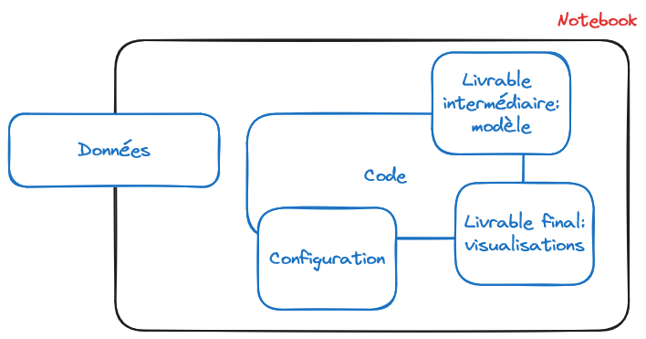
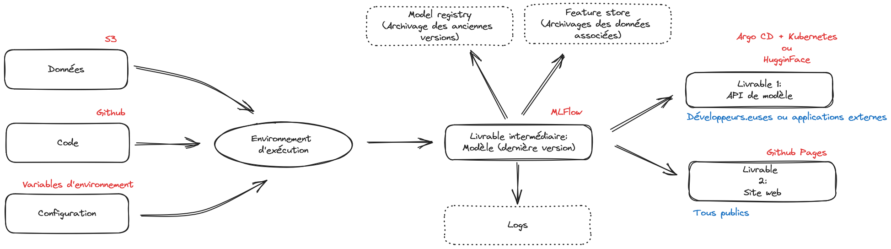
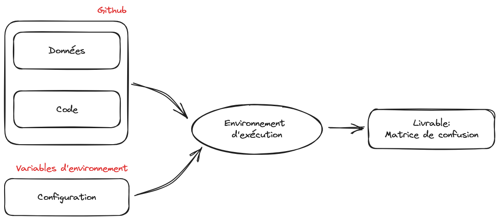
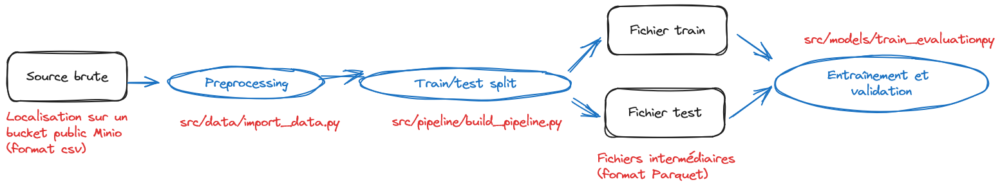
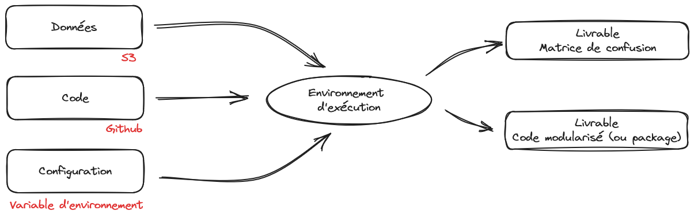
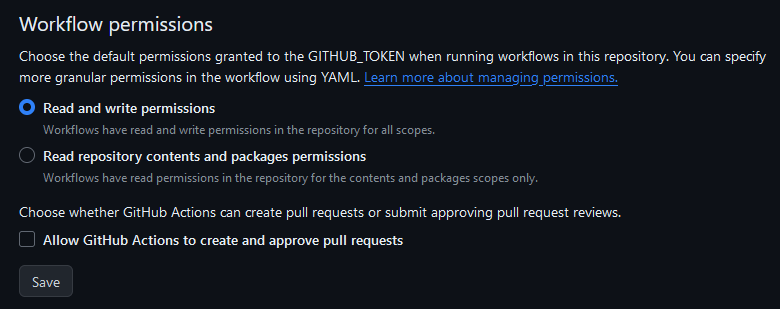
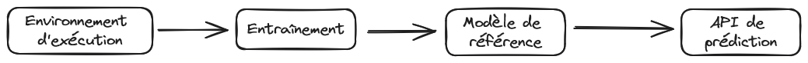
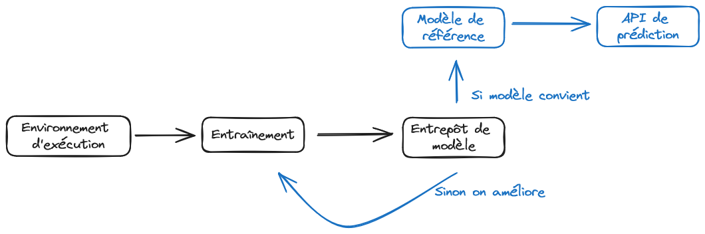

Une application fil rouge pour illustrer l’intérêt d’appliquer graduellement les bonnes pratiques dans une optique de mise en production d’une application de data science.
Dérouler les slides ci-dessous ou cliquer ici pour afficher les slides en plein écran.
Introduction
L’objectif de cette mise en application est d’illustrer les différentes étapes qui séparent la phase de développement d’un projet de celle de la mise en production. Elle permettra de mettre en pratique les différents concepts présentés tout au long du cours.
L’objectif pédagogique principal de cette application est d’adopter un point de vue pragmatique en choisissant des outils et des méthodes de travail qui permettent de réaliser des objectifs ambitieux de valorisation de données. Python sera le trait d’union entre les différentes technologies ou infrastructures que nous utiliserons.
Cette application est un tutoriel pas à pas pour avoir un projet reproductible et disponible sous plusieurs livrables. Toutes les étapes ne sont pas indispensables à tous les projets de data science et il existe des outils alternatifs à ceux présentés. Néanmoins, les outils présentés ont l’avantage d’être très bien intégrés à Python, bien configurés si vous utilisez le SSPCloud comme nous le recommandons, tout en étant agnostiques sur le reste des outils que vous utilisez ; de sorte à ne pas être bloquants si on remplace l’une des briques logicielles par une autre.
Nous nous plaçons dans une situation initiale correspondant à la fin de la phase de développement d’un projet de data science. On a un notebook un peu monolithique, qui réalise les étapes classiques d’un pipeline de machine learning :
Import de données ;
Statistiques descriptives et visualisations ;
Feature engineering ;
Entraînement d’un modèle ;
Evaluation du modèle.
Objectif
L’objectif est d’améliorer le projet de manière incrémentale jusqu’à pouvoir le mettre en production, en le valorisant sous une forme adaptée et en adoptant une méthode de travail fluidifiant les évolutions futures.
La Figure 1 montre que notre point de départ initial, à savoir un notebook, mélange tout. Ceci rend très complexe la mise à jour de notre modèle ou l’exploitation de notre modèle sur de nouvelles données, ce qui est pourtant la raison d’être du machine learning qui est pensé pour l’extrapolation. Si on vous demande de valoriser votre modèle sur de nouvelles données, vous risquez de devoir refaire tourner tout votre notebook, avec le risque de ne pas retrouver les mêmes résultats que dans la version précédente.
La Figure 2 illustre l’horizon auquel nous aboutirons à la fin de cette application. Nous désynchronisons les étapes d’entraînement et de prédiction, en identifiant mieux les pré-requis de chacune et en adoptant des briques technologiques adaptées à celles-ci. Les noms présents sur cette figure sont encore obscurs, c’est normal, mais ils vous deviendrons familiers si vous adoptez une infrastructure et une méthode de travail à l’état de l’art.

Figure 1: Illustration de notre point de départ

Figure 2: Illustration de l’horizon vers lequel on se dirige
Important
Il est important de bien lire les consignes et d’y aller progressivement. Certaines étapes peuvent être rapides, d’autres plus fastidieuses ; certaines être assez guidées, d’autres vous laisser plus de liberté. Si vous n’effectuez pas une étape, vous risquez de ne pas pouvoir passer à l’étape suivante qui en dépend.
Bien que l’exercice soit applicable sur toute configuration bien faite, nous recommandons de privilégier l’utilisation du SSP Cloud, où tous les outils nécessaires sont pré-installés et pré-configurés. Le service VSCode ne sera en effet que le point d’entrée pour l’utilisation d’outils plus exigeants sur le plan de l’infrastructure: Argo, MLFLow, etc.
Ce que cette application ne couvre pas (pour le moment)
A l’heure actuelle, cette application se concentre sur la mise en oeuvre fiable de l’entraînement de modèles de machine learning. Comme vous pouvez le voir, quand on part d’aussi loin qu’un projet monolithique dans un notebook, c’est un travail conséquent d’en arriver à un pipeline pensé pour la production. Cette application vise à vous sensibiliser au fait qu’avoir la Figure 2 en tête et adopter une organisation de travail et faire des choix techniques adéquats, vous fera économiser des dizaines voire centaines d’heures lorsque votre modèle aura vocation à passer en production.
A l’heure actuelle, cette application ne se concentre que sur une partie du cycle de vie d’un projet data ; il y a déjà fort à faire. Nous nous concentrons sur l’entraînement et la mise à disposition d’un modèle à des fins opérationnelles. C’est la première partie du cycle de vie d’un modèle. Dans une approche MLOps, il faut également penser la maintenance de ce modèle et les enjeux que représentent l’arrivée continue de nouvelles données, ou le besoin d’en collecter de nouvelles à travers des annotations, sur la qualité prédictive d’un modèle. Toute entreprise qui ne pense pas cet après est vouée à se faire doubler par un nouveau venu. Une prochaine version de cette application permettra certainement d’illustrer certains des enjeux afférants à la vie en production d’un modèle (supervision, annotations…) sur notre cas d’usage.
Il convient aussi de noter que nous ne faisons que parcourir la surface des sujets que nous évoquons. Ce cours, déjà dense, deviendrait indigeste si nous devions présenter chaque outil dans le détail. Nous laissons donc les curieux approfondir chacun des outils que nous présentons pour découvrir comment en tirer le maximum (et si vous avez l’impression que nous oublions des éléments cruciaux, les issues et pull requests sont bienvenues).
Comment gérer les checkpoints ?
Pour simplifier la reprise en cours de ce fil rouge, nous proposons un système de checkpoints qui s’appuient sur des tagsGit. Ces tags figent le projet tel qu’il est à l’issue d’un exercice donné.
Si vous faites évoluer votre projet de manière expérimentale mais désirez tout de même utiliser à un moment ces checkpoints, il va falloir faire quelques acrobaties Git. Pour cela, nous mettons à disposition un script qui permet de sauvegarder votre avancée dans un tag donné (au cas où, à un moment, vous vouliez revenir dessus) et écraser la branche main avec le tag en question. Par exemple, si vous désirez reprendre après l’exercice 9, vous devrez faire tourner le code dans cette boite :
Avancer à l’état à l’issue de l’application appli9
3
Nettoyer derrière nous
Celui-ci sauvegarde votre avancée dans un tag nommé dev_before_appli9, le pousse sur votre dépôt Github puis force votre branche à adopter l’état du tag appli9.
Partie 0 : initialisation du projet
Nous allons prendre comme point de départ un projet livré exclusivement avec un notebook, à la manière d’un challenge Kaggle. Vous pourrez ainsi voir à quel point ce type de livrable est très loin d’être satisfaisant si on veut que le projet soit réutilisable.
Application préliminaire 1: forker le dépôt d’exemple
Les premières étapes consistent à mettre en place son environnement de travail sur Github:
Générer un jeton d’accès (token) sur GitHub afin de permettre l’authentification en ligne de commande à votre compte. La procédure est décrite ici. Vous ne voyez ce jeton qu’une fois, ne fermez pas la page de suite.
Mettez de côté ce jeton en l’enregistrant dans un gestionnaire de mot de passe ou dans l’espace “Mon compte” du SSP Cloud.
Décocher la case “Copy the main branch only” afin de copier également les tagsGit qui nous permettront de faire les checkpoint.
Ce que vous devriez voir sur la page de création du fork.
Nous recommandons d’utiliser, tout au long de ce projet, l’environnement de développement VSCode. En plus d’être très bien construit, les nombreuses extensions disponibles rendent celui-ci adaptable à tous nos besoins. Comme il s’agit de l’outil sur lequel vous passerez votre quotidien, n’hésitez pas à personnaliser celui-ci grâce aux nombreuses ressources disponibles en ligne1.
Application préliminaire 2: mettre en place son environnement de travail
Il est maintenant possible de ce lancer dans la création de l’environnement de travail:
Ouvrir un service VSCode sur le SSP Cloud. Vous pouvez aller dans la page My Services et cliquer sur New service. Sinon, vous pouvez initialiser la création du service en cliquant directement ici. Modifier les options suivantes:
Dans l’onglet Role, sélectionner le rôle Admin ;
Dans l’onglet Networking, cliquer sur “Enable a custom service port” et laisser la valeur par défaut 5000 pour le numéro du port
Clôner votre dépôt Github en utilisant le terminal depuis Visual Studio (Terminal > New Terminal) et en passant directement le token dans l’URL selon cette structure:
où $TOKEN et $USERNAME sont à remplacer, respectivement, par le jeton que vous avez généré précédemment et votre nom d’utilisateur.
Le script d’initialisation proposé
Ce script initialise quelques extensions intéressantes pour le développement de projets utilisant Python ou des fichiers textes type Markdown ou YAML: diagnostic, mise en forme automatisée, etc.
#!/bin/bash# Define the configuration directory for VS CodeVSCODE_CONFIG_DIR="$HOME/.local/share/code-server/User"# Create the configuration directory if necessarymkdir -p "$VSCODE_CONFIG_DIR"# User settings fileSETTINGS_FILE="$VSCODE_CONFIG_DIR/settings.json"code-server --install-extension yzhang.markdown-all-in-onecode-server --install-extension oderwat.indent-rainbowcode-server --install-extension tamasfe.even-better-tomlcode-server --install-extension aaron-bond.better-commentscode-server --install-extension github.vscode-github-actions# Replace default flake8 linter with project-preconfigured ruffcode-server --uninstall-extension ms-python.flake8code-server --install-extension charliermarsh.ruffjq '. + { "workbench.colorTheme": "Default Dark Modern", # Set the theme"editor.rulers": [80, 100, 120], # Add specific vertical rulers"files.trimTrailingWhitespace": true, # Automatically trim trailing whitespace"files.insertFinalNewline": true, # Ensure files end with a newline"flake8.args": ["--max-line-length=100"# Max line length for Python linting ]}' "$SETTINGS_FILE" > "$SETTINGS_FILE.tmp" && mv "$SETTINGS_FILE.tmp" "$SETTINGS_FILE"
Si, dans quelques jours, vous désirez relancer un service avec cette configuration, vous pouvez cliquer sur ce lien:
En cliquant sur l’onglet Git, vous pouvez renseigner directement votre URL de la forme https://github.com/username/depot.git: cela clônera votre dépôt dans le service et injectera le token pour vous économiser l’authentification à venir lors de la phase de push.
Partie 1 : qualité du script
Cette première partie vise à rendre le projet conforme aux bonnes pratiques présentées dans le cours.
Travail collaboratif avec Git et GitHub (voir Rappels Git).
Le plan de la partie est le suivant :
S’assurer que le script fonctionne ;
Nettoyer le code des scories formelles avec un linter et un formatter ;
Paramétrisation du script ;
Utilisation de fonctions.
Étape 1 : s’assurer que le script s’exécute correctement
On va partir du fichier notebook.py qui reprend le contenu du notebook2 mais dans un script classique. Le travail de nettoyage en sera facilité.
La première étape est simple, mais souvent oubliée : vérifier que le code fonctionne correctement. Pour cela, nous recommandons de faire un aller-retour entre le script ouvert dans VSCode et un terminal pour le lancer.
Application 1: corriger les erreurs
Ouvrir dans VSCode le script titanic.py ;
Exécuter le script en ligne de commande (python titanic.py)3 pour détecter les erreurs ;
Corriger les deux erreurs qui empêchent la bonne exécution ;
Vérifier le fonctionnement du script en utilisant la ligne de commande:
terminal
$ python titanic.py
Le code devrait afficher des sorties.
Aide sur les erreurs rencontrées
La première erreur rencontrée est une alerte FileNotFoundError, la seconde est liée à un package.
Il est maintenant temps de commit les changements effectués avec Git4 :
Avancer à l’état à l’issue de l’application appli1
3
Nettoyer derrière nous
Étape 2: utiliser un linter puis un formatter
On va maintenant améliorer la qualité de notre code en appliquant les standards communautaires. Pour cela, on va utiliser le linter classique PyLint et le formatterBlack. Si vous désirez un outil deux en un, il est possible d’utiliser Ruff en complément ou substitut.
Ce nettoyage automatique du code permettra, au passage, de restructurer notre script de manière plus naturelle.
Important
PyLint, Black et Ruff sont des packagesPython qui s’utilisent principalement en ligne de commande.
Si vous avez une erreur qui suggère que votre terminal ne connait pas PyLint, Black, ou Ruff, n’oubliez pas d’exécuter la commande pip install pylint, pip install black ou pip install ruff.
Le linterPyLint renvoie alors une série d’irrégularités, en précisant à chaque fois la ligne de l’erreur et le message d’erreur associé (ex : mauvaise identation). Il renvoie finalement une note sur 10, qui estime la qualité du code à l’aune des standards communautaires évoqués dans la partie Qualité du code.
Application 2: rendre lisible le script
Diagnostiquer et évaluer la qualité de titanic.py avec PyLint. Regarder la note obtenue.
Utiliser black titanic.py --diff --color pour observer les changements de forme que va induire l’utilisation du formatterBlack. Cette étape n’applique pas les modifications, elle ne fait que vous les montrer.
Réutiliser PyLint pour diagnostiquer l’amélioration de la qualité du script et le travail qui reste à faire.
Comme la majorité du travail restant est à consacrer aux imports:
Mettre tous les imports ensemble en début de script
Retirer les imports redondants en s’aidant des diagnostics de votre éditeur
Réordonner les imports si PyLint vous indique de le faire
Corriger les dernières fautes formelles suggérées par PyLint
Délimiter des parties dans votre code pour rendre sa structure plus lisible. Si des parties vous semblent être dans le désordre, vous pouvez réordonner le script (mais n’oubliez pas de le tester)
Avancer à l’état à l’issue de l’application appli2
3
Nettoyer derrière nous
Le code est maintenant lisible, il obtient à ce stade une note formelle proche de 10. Mais il n’est pas encore totalement intelligible ou fiable. Il y a notamment quelques redondances de code auxquelles nous allons nous attaquer par la suite. Néanmoins, avant cela, occupons-nous de mieux gérer certains paramètres du script: jetons d’API et chemin des fichiers.
Étape 3: gestion des paramètres
Reprendre à partir d'ici
Si vous n'avez plus de VSCode actif avec la configuration proposée dans l'application préliminaire, vous pouvez repartir de ce service:
Avancer à l’état à l’issue de l’application appli2
3
Nettoyer derrière nous
L’exécution du code et les résultats obtenus dépendent de certains paramètres définis dans le code. L’étude de résultats alternatifs, en jouant sur des variantes des (hyper)paramètres, est à ce stade compliquée car il est nécessaire de parcourir le code pour trouver ces paramètres. De plus, certains paramètres personnels comme des jetons d’API ou des mots de passe n’ont pas vocation à être présents dans le code.
Il est plus judicieux de considérer ces paramètres comme des variables d’entrée du script. Cela peut être fait de deux manières:
Avec des arguments optionnels appelés depuis la ligne de commande (Application 3a). Cela peut être pratique pour mettre en oeuvre des tests automatisés mais n’est pas forcément pertinent pour toutes les variables. Nous allons montrer cet usage avec le nombre d’arbres de notre random forest ;
En utilisant un fichier de configuration dont les valeurs sont importées dans le script principal (Application 3b).
Un exemple de définition d’un argument pour l’utilisation en ligne de commande
En s’inspirant de l’exemple ci-dessus 👆️, créer une variable n_trees qui peut éventuellement être paramétrée en ligne de commande et dont la valeur par défaut est 20 ;
Tester cette paramétrisation en ligne de commande avec la valeur par défaut puis 2, 10 et 50 arbres.
L’exercice suivant permet de mettre en application le fait de paramétriser un script en utilisant des variables définies dans un fichier YAML.
Application 3b: La configuration dans un fichier dédié
Installer le package python-dotenv que nous allons utiliser pour charger notre jeton d’API à partir d’une variable d’environnement.
A partir de l’exemple de la documentation, utiliser la fonction load_dotenv pour charger dans Python nos variables d’environnement à partir d’un fichier (vous pouvez le créer mais ne pas le remplir encore avec les valeurs voulues, ce sera fait ensuite)
Créer la variable et vérifier la sortie de Python en faisant tourner titanic.py en ligne de commande
titanic.py
jeton_api = os.environ.get("JETON_API", "")if jeton_api.startswith("$"):print("API token has been configured properly")else:print("API token has not been configured")
Maintenant introduire la valeur voulue pour le jeton d’API dans le fichier d’environnement lu par dotenv
S’il n’existe pas déjà, créer un fichier .gitignore (cf. Chapitre Git). Ajouter dans ce fichier .env car il ne faut pas committer ce fichier. Au passage ajouter __pycache__/ au .gitignore5, cela évitera d’avoir à le faire ultérieurement ;
Créer un fichier README.md où vous indiquez qu’il faut créer un fichier .env pour pouvoir utiliser l’API.
Avancer à l’état à l’issue de l’application appli3
3
Nettoyer derrière nous
Étape 4 : Privilégier la programmation fonctionnelle
Nous allons mettre en fonctions les parties importantes de l’analyse. Ceci facilitera l’étape ultérieure de modularisation de notre projet. Comme cela est évoqué dans les éléments magistraux de ce cours, l’utilisation de fonctions va rendre notre code plus concis, plus traçable, mieux documenté.
Cet exercice étant chronophage, il n’est pas obligatoire de le réaliser en entier. L’important est de comprendre la démarche et d’adopter fréquemment une approche fonctionnelle6. Pour obtenir une chaine entièrement fonctionnalisée, vous pouvez reprendre le checkpoint.
Pour commencer, cet exercice fait un petit pas de côté pour faire comprendre la manière dont les pipelines scikit sont un outil au service des bonnes pratiques.
Application 4 (optionnelle): pourquoi utiliser un pipelineScikit ?
Le pipelineScikit d’estimation et d’évaluation vous a été donné tel quel. Regardez, ci-dessous, le code équivalent sans utiliser de pipelineScikit:
Le code équivalent sans pipeline
from sklearn.impute import SimpleImputerfrom sklearn.preprocessing import MinMaxScaler, OneHotEncoderfrom sklearn.compose import ColumnTransformerfrom sklearn.ensemble import RandomForestClassifierfrom sklearn.metrics import confusion_matriximport pandas as pdimport numpy as np# Définition des variablesnumeric_features = ["Age", "Fare"]categorical_features = ["Embarked", "Sex"]# PREPROCESSING ----------------------------# Handling missing values for numerical featuresnum_imputer = SimpleImputer(strategy="median")X_train[numeric_features] = num_imputer.fit_transform(X_train[numeric_features])X_test[numeric_features] = num_imputer.transform(X_test[numeric_features])# Scaling numerical featuresscaler = MinMaxScaler()X_train[numeric_features] = scaler.fit_transform(X_train[numeric_features])X_test[numeric_features] = scaler.transform(X_test[numeric_features])# Handling missing values for categorical featurescat_imputer = SimpleImputer(strategy="most_frequent")X_train[categorical_features] = cat_imputer.fit_transform(X_train[categorical_features])X_test[categorical_features] = cat_imputer.transform(X_test[categorical_features])# One-hot encoding categorical featuresencoder = OneHotEncoder(handle_unknown='ignore', sparse_output=False)X_train_encoded = encoder.fit_transform(X_train[categorical_features])X_test_encoded = encoder.transform(X_test[categorical_features])# Convert encoded features into a DataFrameX_train_encoded = pd.DataFrame(X_train_encoded, columns=encoder.get_feature_names_out(categorical_features), index=X_train.index)X_test_encoded = pd.DataFrame(X_test_encoded, columns=encoder.get_feature_names_out(categorical_features), index=X_test.index)# Drop original categorical columns and concatenate encoded onesX_train = X_train.drop(columns=categorical_features).join(X_train_encoded)X_test = X_test.drop(columns=categorical_features).join(X_test_encoded)# MODEL TRAINING ----------------------------# Defining the modelmodel = RandomForestClassifier(n_estimators=n_trees)# Fitting the modelmodel.fit(X_train, y_train)# EVALUATION ----------------------------# Scoringrdmf_score = model.score(X_test, y_test)print(f"{rdmf_score:.1%} de bonnes réponses sur les données de test pour validation")# Confusion matrixprint(20*"-")print("matrice de confusion")print(confusion_matrix(y_test, model.predict(X_test)))
Voyez-vous l’intérêt de l’approche par pipeline en termes de lisibilité, évolutivité et fiabilité ?
Créer un notebook qui servira de brouillon. Y introduire le code suivant:
Normalement ce code ne devrait pas prendre plus d’une demie-douzaine de lignes. Sans pipeline le code équivalent, beaucoup plus verbeux et moins fiable, ressemble à celui-ci
Le code équivalent, sans pipeline
import pandas as pdimport numpy as npfrom sklearn.impute import SimpleImputerfrom sklearn.preprocessing import MinMaxScaler# Définition des nouvelles donnéesnew_data = pd.DataFrame({"Age": [25, np.nan, 40, 33, np.nan],"Fare": [10.50, 7.85, np.nan, 22.00, 12.75]})# Définition des transformations (même que dans le pipeline)num_imputer = SimpleImputer(strategy="median")scaler = MinMaxScaler()# Apprentissage des transformations sur X_train (assumant que vous l'avez déjà)X_train_numeric = X_train[["Age", "Fare"]] # Supposons que X_train existenum_imputer.fit(X_train_numeric)scaler.fit(num_imputer.transform(X_train_numeric))# Transformation des nouvelles donnéesnew_data_imputed = num_imputer.transform(new_data)new_data_scaled = scaler.transform(new_data_imputed)# Création du DataFrame finalnew_data_preprocessed = pd.DataFrame( new_data_scaled, columns=["Age_scaled", "Fare_scaled"] # Générer des noms de colonnes adaptés)# Affichage du DataFrameprint(new_data_preprocessed)
Imaginons que vous ayez déjà des données préprocessées:
Maintenant, revenons à notre chaine de production et appliquons des fonctions pour la rendre plus lisible, plus fiable et plus modulaire.
Application 4: adoption des standards de programmation fonctionnelle
Cette application peut être chronophage, vous pouvez aller plus ou moins loin dans la fonctionalisation de votre script en fonction du temps dont vous disposez.
Créer une fonction qui intègre les différentes étapes du pipeline (preprocessing et définition du modèle). Cette fonction prend en paramètre le nombre d’arbres (argument obligatoire) et des arguments optionnels supplémentaires (les colonnes sur lesquelles s’appliquent les différentes étapes du pipeline, max_depth et max_features).
Créer une fonction d’évaluation renvoyant le score obtenu et la matrice de confusion, à l’issue d’une estimation (mais cette estimation est faite en amont de la fonction, pas au sein de celle-ci)
Déplacer toutes les fonctions ensemble, en début de script. Si besoin, ajouter des paramètres à votre fichier d’environnement pour créer de nouvelles variables comme les chemins des données.
En profiter pour supprimer le code zombie qu’on a gardé jusqu’à présent mais qui ne correspond pas vraiment à des opérations utiles à notre chaine de production
Avancer à l’état à l’issue de l’application appli4
3
Nettoyer derrière nous
Cela ne se remarque pas encore vraiment car nous avons de nombreuses définitions de fonctions mais notre chaine de production est beaucoup plus concise (le script fait environ 150 lignes dont une centaine issues de définitions de fonctions génériques). Cette auto-discipline facilitera grandement les étapes ultérieures. Cela aurait été néanmoins beaucoup moins coûteux en temps d’adopter ces bons gestes de manière plus précoce.
Partie 2 : adoption d’une structure modulaire
Dans la partie précédente, on a appliqué de manière incrémentale de nombreuses bonnes pratiques vues tout au long du cours. Ce faisant, on s’est déjà considérablement rapprochés d’un possible partage du code : celui-ci est lisible et intelligible. Le code est proprement versionné sur un dépôt GitHub.
Cependant, le projet est encore perfectible: il est encore difficile de rentrer dedans si on ne sait pas exactement ce qu’on recherche. L’objectif de cette partie est d’isoler les différentes étapes de notre pipeline. Outre le gain de clarté pour notre projet, nous économiserons beaucoup de peines pour la mise en production ultérieure de notre modèle.

Etat du pipeline avant la modularisation
Dans cette partie nous allons continuer les améliorations incrémentales de notre projet avec les étapes suivantes:
Modularisation du code Python pour séparer les différentes étapes de notre pipeline ;
Adopter une structure standardisée pour notre projet afin d’autodocumenter l’organisation de celui-ci ;
Documenter les packages indispensables à l’exécution du code ;
Stocker les données dans un environnement adéquat afin de continuer la démarche de séparer conceptuellement les données du code en de la configuration.
Étape 1 : modularisation
Nous allons profiter de la modularisation pour adopter une structure applicative pour notre code. Celui-ci n’étant en effet plus lancé que depuis la ligne de commande, on peut considérer qu’on construit une application générique où un script principal (main.py) encapsule des éléments issus d’autres scripts Python.
Application 5: modularisation
Déplacer les fonctions dans une série de fichiers dédiés:
build_pipeline.py: script avec la définition du pipeline
train_evaluate.py: script avec les fonctions d’évaluation du projet
Spécifier les dépendances (i.e. les packages à importer) dans les modules pour que ceux-ci puissent s’exécuter indépendamment ;
Renommer titanic.py en main.py pour suivre la convention de nommage des projets Python ;
Importer les fonctions nécessaires à partir des modules.
Vérifier que tout fonctionne bien en exécutant le scriptmain à partir de la ligne de commande :
terminal
$ python main.py
Optionnel: profitez en pour mettre un petit coup de formatter à votre projet, si vous ne l’avez pas fait régulièrement.
Avancer à l’état à l’issue de l’application appli5
3
Nettoyer derrière nous
Étape 2 : adopter une architecture standardisée de projet
On dispose maintenant d’une application Python fonctionnelle. Néanmoins, le projet est certes plus fiable mais sa structuration laisse à désirer et il serait difficile de rentrer à nouveau dans le projet dans quelques temps.
Comme cela est expliqué dans la partie Structure des projets, on va adopter une structure certes arbitraire mais qui va faciliter l’autodocumentation de notre projet. De plus, une telle structure va faciliter des évolutions optionnelles comme la packagisation du projet. Passer d’une structure modulaire bien faite à un package est quasi-immédiat en Python.
On va donc modifier l’architecture de notre projet pour la rendre plus standardisée. Pour cela, on va s’inspirer des structures cookiecutter qui génèrent des templates de projet. En l’occurrence notre source d’inspiration sera le template datascience issu d’un effort communautaire.
Note
L’idée de cookiecutter est de proposer des templates que l’on utilise pour initialiser un projet, afin de bâtir à l’avance une structure évolutive. La syntaxe à utiliser dans ce cas est la suivante :
Ici, on a déjà un projet, on va donc faire les choses dans l’autre sens : on va s’inspirer de la structure proposée afin de réorganiser celle de notre projet selon les standards communautaires.
En s’inspirant du cookiecutter data science on va adopter la structure suivante:
Avancer à l’état à l’issue de l’application appli6
3
Nettoyer derrière nous
Étape 3: mieux tracer notre chaine de production
Indiquer l’environnement minimal de reproductibilité
Le script main.py nécessite un certain nombre de packages pour être fonctionnel. Chez vous les packages nécessaires sont bien sûr installés mais êtes-vous assuré que c’est le cas chez la personne qui testera votre code ?
Afin de favoriser la portabilité du projet, il est d’usage de “fixer l’environnement”, c’est-à-dire d’indiquer dans un fichier toutes les dépendances utilisées ainsi que leurs version. Nous proposons de créer un fichier requirements.txt minimal, sur lequel nous reviendrons dans la partie consacrée aux environnements reproductibles.
Le fichier requirements.txt est conventionnellement localisé à la racine du projet. Ici on ne va pas fixer les versions, on raffinera ce fichier ultérieurement.
Application 7a: création du requirements.txt
Créer un fichier requirements.txt avec la liste des packages nécessaires
Ajouter une indication dans README.md sur l’installation des packages grâce au fichier requirements.txt
Tracer notre chaîne
Quand votre projet passera en production, vous aurez un accès limité à celui-ci. Il est donc important de faire remonter, par le biais du logging des informations critiques sur votre projet qui vous permettront de savoir où il en est (si vous avez accès à la console où il tourne) ou là où il s’est arrêté.
L’utilisation de print montre rapidement ses limites pour cela. Les informations enregistrées ne persistent pas après la session et sont quelques peu rudimentaires.
Pour faire du logging, la librairie consacrée depuis longtemps en Python est… logging. Il existe aussi une librairie nommée loguru qui est un peu plus simple à configurer (l’instanciation du logger est plus aisée) et plus agréable grâce à ses messages en couleurs qui permettent de visuellement trier les informations.
L’exercice suivant peut être fait avec les deux librairies, cela ne change pas grand chose. Les prochaines applications repartiront de la version utilisant la librairie standard logging.
Aller sur la documentation de la librairie ici et sur ce tutoriel pour trouver des sources d’inspiration sur la configuration et l’utilisation de logging.
Pour afficher les messages dans la console et dans un fichier de log, s’inspirer de cette réponse sur stack overflow.
Tester en ligne de commande votre code et observer le fichier de log
Installer loguru et l’ajouter au requirements.txt
En s’aidant du README du projet sur Github, remplacer nos print par différents types de messages (info, success, etc.).
Tester l’exécution du script en ligne de commande et observer vos sorties
Mettre à jour le logger pour enregistrer dans un fichier de log. Ajouter celui-ci au .gitignore puis tester en ligne de commande votre script. Ouvrir le fichier en question, refaites tourner le script et regardez son évolutoin.
Il est possible avec loguru de capturer les erreurs des fonctions grâce au système de cache décrit ici. Introduire une erreur dans une des fonctions (par exemple dans create_pipeline) avec un code du type raise ValueError("Problème ici")
Avancer à l’état à l’issue de l’application appli7
3
Nettoyer derrière nous
Étape 4 : stocker les données de manière externe
Pour cette partie, il faut avoir un service VSCode dont les jetons d’authentification à S3 sont valides. Pour cela, si vous êtes sur le SSPCloud, le plus simple est de recréer un nouveau service avec le bouton suivant
et remplir l’onglet Git comme ça votre VSCode sera pré à l’emploi (cf. application 0).
Une fois que vous avez un VSCode fonctionnel, il est possible de reprendre cette application fil rouge depuis le checkpoint précédent.
Reprendre à partir d'ici
Si vous n'avez plus de VSCode actif avec la configuration proposée dans l'application préliminaire, vous pouvez repartir de ce service:
Avancer à l’état à l’issue de l’application appli7
3
Nettoyer derrière nous
Enfin, il vous suffira d’ouvrir un terminal et faire pip install -r requirements.txt && python main.py pour pouvoir démarrer l’application.
L’étape précédente nous a permis d’isoler la configuration. Nous avons conceptuellement isolé les données du code lors des applications précédentes. Cependant, nous n’avons pas été au bout du chemin car le stockage des données reste conjoint à celui du code. Nous allons maintenant dissocier ces deux éléments.
Pour en savoir plus sur le système de stockage S3
Pour mettre en oeuvre cette étape, il peut être utile de comprendre un peu comme fonctionne le SSP Cloud. Vous devrez suivre la documentation du SSP Cloud pour la réaliser. Une aide-mémoire est également disponible dans le cours de 2e année de l’ENSAE Python pour la data science.
Pour en savoir plus sur le format Parquet
L’objectif de cette application est de montrer comment utiliser le format Parquet dans une chaîne production ; un objectif somme toute modeste.
Si vous voulez aller plus loin dans la découverte du format Parquet, vous pouvez consulter cette ressource R très similaire à ce cours (oui elle est faite par les mêmes auteurs…) et essayer de faire les exercices avec votre librairie Python de prédilection (PyArrow ou DuckDB)
Et si vous utilisez une infrastructure cloud qui n’est pas le SSPCloud ? (une idée saugrenue mais sait-on jamais)
Les exemples à venir peuvent très bien être répliqués sur n’importe quel cloud provider qui propose une solution de type S3, qu’il s’agisse d’un cloud provider privé (AWS, GCP, Azure, etc.) ou d’une réinstanciation ad hoc du projet Onyxia, le logiciel derrière le SSPCloud.
Pour un système de stockage S3, il suffit de changer les paramètres de connexion de s3fs (endpoint, region, etc.). Pour les stockages sur GCP, les codes sont presque équivalents, il suffit de remplacer la librairie s3fs par gcfs; ces deux librairies sont en fait des briques d’un standard plus général de gestion de systèmes de fichiers en Pythonffspec.
Le chapitre sur la structure des projets développe l’idée qu’il est recommandé de converger vers un modèle où environnements d’exécution, de stockage du code et des données sont conceptuellement séparés. Ce haut niveau d’exigence est un gain de temps important lors de la mise en production car au cours de cette dernière, le projet est amené à être exécuté sur une infrastructure informatique dédiée qu’il est bon d’anticiper. Schématiquement, nous visons la structure de projet suivante:
A l’heure actuelle, les données sont stockées dans le dépôt. C’est une mauvaise pratique. En premier lieu, Git n’est techniquement pas bien adapté au stockage de données. Ici ce n’est pas très grave car il ne s’agit pas de données volumineuses et ces dernières ne sont pas modifiées au cours de notre chaine de traitement.
La raison principale est que les données traitées par les data scientists sont généralement soumises à des clauses de confidentialités (RGPD, secret statistique…). Mettre ces données sous contrôle de version c’est prendre le risque de les divulguer à un public non habilité. Il est donc recommandé de privilégier des outils techniques adaptés au stockage de données.
L’idéal, dans notre cas, est d’utiliser une solution de stockage externe. On va utiliser pour cela MinIO, la solution de stockage de type S3 offerte par le SSP Cloud. Cela nous permettra de supprimer les données de Github tout en maintenant la reproductibilité de notre projet 7.
Plus concrètement, nous allons adopter le pipeline suivant pour notre projet:

Le scénario type est que nous avons une source brute, reçue sous forme de CSV, dont on ne peut changer le format. Il aurait été idéal d’avoir un format plus adapté au traitement de données pour ce fichier mais ce n’était pas de notre ressort. Notre chaine va aller chercher ce fichier, travailler dessus jusqu’à valoriser celui-ci sous la forme de notre matrice de confusion. Si on imagine que notre chaine prend un certain temps, il n’est pas inutile d’écrire des données intermédiaires. Pour faire cela, puisque nous avons la main, autant choisir un format adapté, à savoir le format Parquet.
Cette application va se dérouler en trois temps:
Upload de notre source brute (CSV) sur S3
Illustration de l’usage des librairies cloud native pour lire celle-ci
Partage public de cette donnée pour la rendre accessible de manière plus simple à nos futures applications.
Application 8a: ajout de données sur le système de stockage S3
Pour commencer, à partir de la ligne de commande, utiliser l’utilitaire MinIO pour copier les données data/raw/data.csv vers votre bucket personnel. Les données intermédiaires peuvent être laissées en local mais doivent être ajoutées au .gitignore.
en modifiant la variable BUCKET_PERSONNEL, l’emplacement de votre bucket personnel
Pour se simplifier la vie, dans les prochaines applications, on va utiliser des URL de téléchargement des fichiers (comme si ceux-ci étaient sur n’importe quel espace de stockage) plutôt que d’utiliser une librairie S3 compatible comme boto3 ou s3fs.
Néanmoins, il est utile de les utiliser une fois pour comprendre la logique. Pour aller plus loin sur ces librairies, vous pouvez consulter cette page du cours de 2A de Python pour la data science.
Pour commencer, on va lister les fichiers se trouvant dans un bucket. En ligne de commande, sur notre poste local, on ferait ls (cf. Linux 101). Cela ne va pas beaucoup différer avec les librairies cloud native:
Dans un terminal, copier-coller ligne à ligne ce code, le modifier et exécuter:
import s3fs1MY_BUCKET="mon_nom_utilisateur_sspcloud"2CHEMIN ="ensae-reproductibilite/data/raw"mc ls s3/${MY_BUCKET}/${CHEMIN}
1
Changer avec le bucket
2
Changer en fonction du chemin voulu
On va maintenant lire directement une donnée stockée sur S3. Pour illustrer le fait que cela change peu notre code d’être sur un système cloud avec les librairies adaptées, on va lire directement un fichier CSV stocké sur le SSPCloud, sans passer par un fichier en local8.
Application 8b: importer une donnée depuis un système de stockage S3
Pour illustrer la cohérence avec un système de fichier local, voici trois solutions pour lire le fichier que vous venez de mettre sur S3. Attention, il faut avoir des jetons de connexion à S3 à jour. Si vous avez cette erreur
A client error (InvalidAccessKeyId) occurred when calling the ListBuckets operation: The AWS Access Key Id you provided does not exist in our records.
c’est que vos identifiants de connexion ne sont plus à jour (pour des raisons de sécurité, ils sont régulièrement renouvelés). Dans ce cas, recréez un service VSCode avec le bouton proposé plus haut.
Dans un notebook, copier-coller et mettre à jour ces deux variables qui seront utilisées dans différents exemples:
import osimport duckdbcon = duckdb.connect(database=":memory:")con.execute(f"""CREATE SECRET secret ( TYPE S3, KEY_ID '{os.environ["AWS_ACCESS_KEY_ID"]}', SECRET '{os.environ["AWS_SECRET_ACCESS_KEY"]}', ENDPOINT 'minio.lab.sspcloud.fr', SESSION_TOKEN '{os.environ["AWS_SESSION_TOKEN"]}', REGION 'us-east-1', URL_STYLE 'path', SCOPE 's3://{MY_BUCKET}/');""")query_definition =f"SELECT * FROM read_csv('s3://{MY_BUCKET}/{CHEMIN_FICHIER}')"df = con.sql(query_definition)df
Pour illustrer le fonctionnement encore plus simple de S3 avec les fichiers Parquet, on propose de copier un Parquet mis à disposition dans un bucket collectiv vers votre bucket personnel:
import pyarrow as paimport pyarrow.parquet as pqs3 = pa.fs.S3FileSystem(endpoint_override ="https://minio.lab.sspcloud.fr")df = pq.read_table(f"{MY_BUCKET}/{CHEMIN_FICHIER}", filesystem=s3)df
import osimport duckdbcon = duckdb.connect(database=":memory:")con.execute(f"""CREATE SECRET secret ( TYPE S3, KEY_ID '{os.environ["AWS_ACCESS_KEY_ID"]}', SECRET '{os.environ["AWS_SECRET_ACCESS_KEY"]}', ENDPOINT 'minio.lab.sspcloud.fr', SESSION_TOKEN '{os.environ["AWS_SESSION_TOKEN"]}', REGION 'us-east-1', URL_STYLE 'path', SCOPE 's3://{MY_BUCKET}/');""")query_definition =f"SELECT * FROM read_parquet('s3://{MY_BUCKET}/{CHEMIN_FICHIER}')"df = con.sql(query_definition)df
Pour aller plus loin sur le format Parquet, notamment découvrir comment importer des données partitionnées, vous pouvez traduire en Python les exemples issus de la formation aux bonnes pratiques avec R de l’Insee.
Application 8c: privilégier le format Parquet dans notre chaîne
Dans main.py, remplacer le format csv initialement prévu par un format parquet:
Application 8d: partage de données sur le système de stockage S3
Par défaut, le contenu de votre bucket est privé, seul vous y avez accès. Pour pouvoir lire votre donnée, vos applications externes devront utiliser des jetons vous identifiant. Ici, comme nous utilisons une donnée publique, vous pouvez rendre accessible celle-ci à tous en lecture. Dans le jargon S3, cela signifie donner un accès anonyme à votre donnée.
Le modèle de commande à utiliser dans le terminal est le suivant:
terminal
1$ BUCKET_PERSONNEL="nom_utilisateur_sspcloud"$ mc anonymous set download s3/${BUCKET_PERSONNEL}/ensae-reproductibilite/data/raw/
1
Remplacer par le nom de votre bucket.
Les URL de téléchargement seront de la forme https://minio.lab.sspcloud.fr/<BUCKET_PERSONNEL>/ensae-reproductibilite/data/raw/data.csv
Remplacer la définition de data_path pour utiliser, par défaut, directement l’URL dans l’import. Modifier, si cela est pertinent, aussi votre fichier .env.
Modifier avec URL_RAW un lien de la forme "https://minio.lab.sspcloud.fr/${BUCKET_PERSONNEL}/ensae-reproductibilite/data/raw/data.csv" (ne laissez pas ${BUCKET_PERSONNEL}, remplacez par la vraie valeur!).
Ajouter le dossier data/ au .gitignore ainsi que les fichiers *.parquet
Supprimer le dossier data de votre projet et faites git rm --cached -r data
Vérifier le bon fonctionnement de votre application.
Maintenant qu’on a arrangé la structure de notre projet, c’est l’occasion de supprimer le code qui n’est plus nécessaire au bon fonctionnement de notre projet (cela réduit la charge de maintenance9).
Pour vous aider, vous pouvez utiliser vulture de manière itérative pour vous assister dans le nettoyage de votre code.
terminal
pip install vulturevulture .
Exemple de sortie
terminal
$ vulture .
src/data/import_data.py:3: unused function 'split_and_count' (60% confidence)src/pipeline/build_pipeline.py:12: unused function 'split_train_test' (60% confidence)
Avancer à l’état à l’issue de l’application appli8
3
Nettoyer derrière nous
Partie 2bis: packagisation de son projet (optionnel)
Cette série d’actions n’est pas forcément pertinente pour tous les projets. Elle fait un peu la transition entre la modularité et la portabilité.
Étape 1 : proposer des tests unitaires (optionnel)
Notre code comporte un certain nombre de fonctions génériques. On peut vouloir tester leur usage sur des données standardisées, différentes de celles du Titanic.
Même si la notion de tests unitaires prend plus de sens dans un package, nous pouvons proposer dans le projet des exemples d’utilisation de la fonction, ceci peut être pédagogique.
Nous allons utiliser unittest pour effectuer des tests unitaires. Cette approche nécessite quelques notions de programmation orientée objet ou une bonne discussion avec ChatGPT.
Application 9: test unitaire (optionnel)
Dans le dossier tests/, créer avec l’aide de ChatGPT ou de Copilot un test pour la fonction split_and_count.
Effectuer le test unitaire en ligne de commande avec unittest (python -m unittest tests/test_split.py). Corriger le test unitaire en cas d’erreur.
Si le temps le permet, proposer des variantes ou d’autres tests.
Avancer à l’état à l’issue de l’application appli9
3
Nettoyer derrière nous
Note
Lorsqu’on effectue des tests unitaires, on cherche généralement à tester le plus de lignes possibles de son code. On parle de taux de couverture (coverage rate) pour désigner la statistique mesurant cela.
Cela peut s’effectuer de la manière suivante avec le package coverage:
terminal
$ coverage run -m unittest tests/test_create_variable_title.py$ coverage report -m
Name Stmts Miss Cover Missing-------------------------------------------------------------------src/features/build_features.py 342138%35-36, 48-58, 71-74, 85-89, 99-101, 111-113tests/test_create_variable_title.py 21195%54-------------------------------------------------------------------TOTAL 552260%
Le taux de couverture est souvent mis en avant par les gros projets comme indicateur de leur qualité. Il existe d’ailleurs des badges Github dédiés.
Étape 2 : transformer son projet en package (optionnel)
Notre projet est modulaire, ce qui le rend assez simple à transformer en package, en s’inspirant de la structure du cookiecutter adapté, issu de cet ouvrage.
On va créer un package nommé titanicml qui encapsule tout notre code et qui sera appelé par notre script main.py. La structure attendue est la suivante:
Il existe plusieurs frameworks pour construire un package. Nous allons privilégier Poetry à Setuptools.
Note
Pour créer la structure minimale d’un package, le plus simple est d’utiliser le cookiecutter adapté, issu de cet ouvrage.
Comme on a déjà une structure très modulaire, on va plutôt recréer cette structure dans notre projet déjà existant. En fait, il ne manque qu’un fichier essentiel, le principal distinguant un projet classique d’un package : pyproject.toml.
Avancer à l’état à l’issue de l’application appli8
3
Nettoyer derrière nous
Dans la partie précédente, on a appliqué de manière incrémentale de nombreuses bonnes pratiques vues dans les chapitres Qualité du code et Structure des projets tout au long du cours.
Ce faisant, on s’est déjà considérablement rapprochés d’une possible mise en production : le code est lisible, la structure du projet est normalisée et évolutive, et le code est proprement versionné sur un dépôt GitHub .
Illustration de l’état actuel du projet

A présent, nous avons une version du projet qui est largement partageable. Du moins en théorie, car la pratique est souvent plus compliquée : il y a fort à parier que si vous essayez d’exécuter votre projet sur un autre environnement (typiquement, votre ordinateur personnel), les choses ne se passent pas du tout comme attendu. Cela signifie qu’en l’état, le projet n’est pas portable : il n’est pas possible, sans modifications coûteuses, de l’exécuter dans un environnement différent de celui dans lequel il a été développé.
Dans cette troisème partie de notre travail vers la mise en production, nous allons voir comment normaliser l’environnement d’exécution afin de produire un projet portable. Autrement dit, nous n’allons plus nous contenter de modularité mais allons rechercher la portabilité. On sera alors tout proche de pouvoir mettre le projet en production.
On progressera dans l’échelle de la reproductibilité de la manière suivante:
Nous allons repartir de l’application 8, c’est-à-dire d’un projet modulaire mais qui n’est pas, à strictement parler, un package (objet des applications optionnelles suivantes 9 et 10).
Reprendre à partir d'ici
Si vous n'avez plus de VSCode actif avec la configuration proposée dans l'application préliminaire, vous pouvez repartir de ce service:
Avancer à l’état à l’issue de l’application appli8
3
Nettoyer derrière nous
Étape 1 : un environnement pour rendre le projet portable
Pour qu’un projet soit portable, il doit remplir deux conditions:
Ne pas nécessiter de dépendance qui ne soient pas renseignées quelque part ;
Ne pas proposer des dépendances inutiles, qui ne sont pas utilisées dans le cadre du projet.
Le prochain exercice vise à mettre ceci en oeuvre. Comme expliqué dans le chapitre portabilité, le choix du gestionnaire d’environnement est laissé libre. Il est recommandé de privilégier venv si vous découvrez la problématique de la portabilité.
L’approche la plus légère est l’environnement virtuel. Nous avons en fait implicitement déjà commencé à aller vers cette direction en créant un fichier requirements.txt.
Application 11a: environnement virtuel venv
Exécuter pip freeze en ligne de commande et observer la (très) longue liste de package
Utiliser ls pour observer et comprendre le contenu du dossier titanic/bin installé
Le SSPCloud, par défaut, fonctionne sur un environnement conda. Le désactiver en faisant conda deactivate.
Activer l’environnement et vérifier l’installation de Python maintenant utilisée par votre machine
Vérifier directement depuis la ligne de commande que Python exécute bien une commande12 avec:
terminal
$ python -c"print('Hello')"
Faire la même chose mais avec import pandas as pd
Installer les packages à partir du requirements.txt. Tester à nouveau import pandas as pd pour comprendre la différence.
Exécuter pip freeze et comprendre la différence avec la situation précédente.
Vérifier que le script main.py fonctionne bien. Sinon ajouter les packages manquants dans le requirements.txt et reprendre de manière itérative à partir de la question 7.
Ajouter le dossier titanic/ au .gitignore pour ne pas ajouter ce dossier à Git.
Aide pour la question 4
Après l’activation, vous pouvez vérifier quel python est utilisé de cette manière
Avancer à l’état à l’issue de l’application appli11a
3
Nettoyer derrière nous
Les environnements conda sont plus lourds à mettre en oeuvre que les environnements virtuels mais peuvent permettre un contrôle plus formel des dépendances.
Application 11b: environnement conda
Exécuter conda env export en ligne de commande et observer la (très) longue liste de package
Activer l’environnement et vérifier l’installation de Python maintenant utilisée par votre machine
Vérifier directement depuis la ligne de commande que Python exécute bien une commande13 avec:
terminal
$ python -c"print('Hello')"
Faire la même chose mais avec import pandas as pd
Installer les packages qu’on avait listé dans le requirements.txt précédemment. Ne pas faire un pip install -r requirements.txt afin de privilégier conda install
Exécuter à nouveau conda env export et comprendre la différence avec la situation précédente14.
Vérifier que le script main.py fonctionne bien. Sinon installer les packages manquants et reprndre de manière itérative à partir de la question 7.
Quand main.py fonctionne, faire conda env export > environment.yml pour figer l’environnement de travail.
Après avoir installé uv, exécuter uv init . et supprimer le fichier hello.py généré. Ouvrir le pyproject.toml et observer sa structure.
Exécuter uv pip freeze en ligne de commande et observer la (très) longue liste de package
Créer un environnement virtuel titanic par le biais d’uv (documentation) sous le nom titanic
Utiliser ls pour observer et comprendre le contenu du dossier titanic/bin installé
Activer l’environnement et vérifier l’installation de Python maintenant utilisée par votre machine
Vérifier directement depuis la ligne de commande que Python exécute bien une commande15 avec:
terminal
$ python -c"print('Hello')"
Faire la même chose mais avec import pandas as pd. Maintenant, essayer uv run main.py en ligne de commande: comprenez-vous ce qu’il se passe ?
Installer de manière itérative les packages à partir d’uv add (documentation) et en testant avec uv run main.py: avez-vous remarqué la vitesse à laquelle cela a été quand vous avez fait uv add pandas ?
Observer votre pyproject.toml. Regarder le lockfileuv.lock. Générer automatiquement le requirements.txt en faisant pip compile et regarder celui-ci.
Ajouter le dossier titanic/ au .gitignore pour ne pas ajouter ce dossier à Git.
Aide pour la question 5
Après l’activation, vous pouvez vérifier quel python est utilisé de cette manière
Avancer à l’état à l’issue de l’application appli11c
3
Nettoyer derrière nous
Étape 2: construire l’environnement de notre application via un script shell
Les environnements virtuels permettent de mieux spécifier les dépendances de notre projet, mais ne permettent pas de garantir une portabilité optimale. Pour cela, il faut recourir à la technologie des conteneurs. L’idée est de construire une machine, en partant d’une base quasi-vierge, qui permette de construire étape par étape l’environnement nécessaire au bon fonctionnement de notre projet. C’est le principe des conteneurs Docker .
Leur méthode de construction étant un peu difficile à prendre en main au début, nous allons passer par une étape intermédiaire afin de bien comprendre le processus de production.
Nous allons d’abord créer un script shell, c’est à dire une suite de commandes Linux permettant de construire l’environnement à partir d’une machine vierge ;
Nous transformerons celui-ci en Dockerfile dans un deuxième temps. C’est l’objet de l’étape suivante.
Sinon, elle peut être réalisée en essai-erreur par le biais des services d’intégration continue de Github ou Gitlab . Néanmoins, nous présenterons l’utilisation de ces services plus tard, dans la prochaine partie.
Maintenant qu’on sait que ce script préparatoire fonctionne, on va le transformer en Dockerfile pour anticiper la mise en production. Comme la syntaxe Docker est légèrement différente de la syntaxe Linux classique (voir le chapitre portabilité), il va être nécessaire de changer quelques instructions mais ceci sera très léger.
On va tester le Dockerfile dans un environnement bac à sable pour ensuite pouvoir plus facilement automatiser la construction de l’image Docker.
Application 13: création de l’image Docker
Se placer dans un environnement avec Docker, par exemple Play with Docker
Création du Dockerfile
Dans le terminal Linux, cloner votre dépôt Github
Repartir de la dernière version à disposition. Par exemple, si vous avez privilégié l’environnement virtuel venv, ce sera:
Utiliser docker build pour créer une image avec le tag my-python-app
terminal
$ docker build . -t my-python-app
Vérifier les images dont vous disposez. Vous devriez avoir un résultat proche de celui-ci :
terminal
$ docker images
REPOSITORY TAG IMAGE ID CREATED SIZEmy-python-app latest 188957e16594 About a minute ago 879MB
Tester l’image: découverte du cache
L’étape de build a fonctionné: une image a été construite.
Mais fait-elle effectivement ce que l’on attend d’elle ?
Pour le savoir, il faut passer à l’étape suivante, l’étape de run.
terminal
$ docker run -it my-python-app
python3: can't open file '/~/titanic/main.py': [Errno 2] No such file or directory
Le message d’erreur est clair : Docker ne sait pas où trouver le fichier main.py. D’ailleurs, il ne connait pas non plus les autres fichiers de notre application qui sont nécessaires pour faire tourner le code, par exemple le dossier src.
Avant l’étape CMD, copier les fichiers nécessaires sur l’image afin que l’application dispose de tous les éléments nécessaires pour être en mesure de fonctionner.
Refaire tourner l’étape de run. A ce stade, la matrice de confusion doit fonctionner 🎉. Vous avez créé votre première application reproductible !
Note
Ici, le cache permet d’économiser beaucoup de temps. Par besoin de refaire tourner toutes les étapes, Docker agit de manière intelligente en faisant tourner uniquement les étapes qui ont changé.
Avancer à l’état à l’issue de l’application appli13
3
Nettoyer derrière nous
Imaginez que vous êtes au restaurant et qu’on ne vous serve pas le plat mais seulement la recette et que, de plus, on vous demande de préparer le plat chez vous avec les ingrédients dans votre frigo. Vous seriez quelque peu déçu. En revanche, si vous avez goûté au plat, que vous êtes un réel cordon bleu et qu’on vous donne la recette pour refaire ce plat ultérieurement, peut-être que vous appréciriez plus.
Cette analogie illustre l’enjeu de définir le public cible et ses attentes afin de fournir un livrable adapté. Une image Docker est un livrable qui n’est pas forcément intéressant pour tous les publics. Certains préféreront avoir un plat bien préparé qu’une recette ; certains apprécieront avoir une image Docker mais d’autres ne seront pas en mesure de construire celle-ci ou ne sauront pas la faire fonctionner. Une image Docker est plus souvent un moyen pour faciliter la mise en service d’une production qu’une fin en soi.
Nous allons donc proposer plusieurs types de livrables plus classiques par la suite. Ceux-ci correspondront mieux aux attendus des publics utilisateurs de services construits à partir de techniques de data science. Docker est néanmoins un passage obligé car l’ensemble des types de livrables que nous allons explorer reposent sur la standardisation permise par les conteneurs.
Cette approche nous permettra de quitter le domaine de l’artisanat pour s’approcher d’une industrialisation de la mise à disposition de notre projet. Ceci va notamment nous amener à mettre en oeuvre l’approche pragmatique du DevOps qui consiste à intégrer dès la phase de développement d’un projet les contraintes liées à sa mise à disposition au public cible (cette approche est détaillée plus amplement dans le chapitre sur la mise en production).
L’automatisation et la mise à disposition automatisée de nos productions sera faite progressivement, au cours des prochaines parties. Tous les projets n’ont pas vocation à aller aussi loin dans ce domaine. L’opportunité doit être comparée aux coûts humains et financiers de leur mise en oeuvre et de leur cycle de vie. Avant de faire une production en série de nos modèles, nous allons déjà commencer par automatiser quelques tests de conformité de notre code. On va ici utiliser l’intégration continue pour deux objectifs distincts:
la mise à disposition de l’image Docker ;
la mise en place de tests automatisés de la qualité du code sur le modèle de notre linter précédent.
Nous allons utiliser Github Actions pour cela. Il s’agit de serveurs standardisés mis à disposition gratuitement par Github . Gitlab , l’autre principal acteur du domaine, propose des services similaires. L’implémentation est légèrement différente mais les principes sont identiques.
Reprendre à partir d'ici
Si vous n'avez plus de VSCode actif avec la configuration proposée dans l'application préliminaire, vous pouvez repartir de ce service:
Avancer à l’état à l’issue de l’application appli13
3
Nettoyer derrière nous
Étape 1: mise en place de tests automatisés
Avant d’essayer de mettre en oeuvre la création de notre image Docker de manière automatisée, nous allons présenter la logique de l’intégration continue en testant de manière automatisée notre script main.py.
Pour cela, nous allons partir de la structure proposée dans l’action officielle. La documentation associée est ici. Des éléments succincts de présentation de la logique déclarative des actions Github sont disponibles dans le chapitre sur la mise en production. Néanmoins, la meilleure école pour comprendre le fonctionnement de celles-ci est de parcourir la documentation du service et d’observer les actions Github mises en oeuvre par vos projets favoris, celles-ci seront fort instructives !
Application 14: premier script d’intégration continue
A partir de l’exemple présent dans la documentation officielle de Github , on a déjà une base de départ qui peut être modifiée. Les questions suivantes permettront d’automatiser les tests et le diagnostic qualité de notre code16
Créer un fichier .github/workflows/test.yaml avec le contenu de l’exemple de la documentation
Avec l’aide de la documentation, introduire une étape d’installation des dépendances. Utiliser le fichier requirements.txt pour installer les dépendances.
Utiliser pylint pour vérifier la qualité du code. Ajouter l’argument --fail-under=6 pour renvoyer une erreur en cas de note trop basse17
Utiliser une étape appelant notre application en ligne de commande (python main.py) pour tester que la matrice de confusion s’affiche bien.
Créer un secret stockant une valeur du JETON_API. Ne le faites pas commencer par un “$” comme ça vous pourrez regarder la log ultérieurement
Aller voir votre test automatisé dans l’onglet Actions de votre dépôt sur Github
(optionnel): Créer un artefact à partir du fichier de log que vous créez dans main.py
Avancer à l’état à l’issue de l’application appli14
3
Nettoyer derrière nous
Maintenant, nous pouvons observer que l’onglet Actions s’est enrichi. Chaque commit va entraîner une série d’actions automatisées.
Si l’une des étapes échoue, ou si la note de notre projet est mauvaise, nous aurons une croix rouge (et nous recevrons un mail). On pourra ainsi détecter, en développant son projet, les moments où on dégrade la qualité du script afin de la rétablir immédiatemment.
Étape 2: Automatisation de la livraison de l’image Docker
Maintenant, nous allons automatiser la mise à disposition de notre image sur DockerHub (le lieu de partage des images Docker). Cela facilitera sa réutilisation mais aussi des valorisations ultérieures.
Là encore, nous allons utiliser une série d’actions pré-configurées.
Pour que Github puisse s’authentifier auprès de DockerHub, il va falloir d’abord interfacer les deux plateformes. Pour cela, nous allons utiliser un jeton (token) DockerHub que nous allons mettre dans un espace sécurisé associé à votre dépôt Github.
Application 15a: configuration
Se rendre sur https://hub.docker.com/ et créer un compte. Il est recommandé d’associer ce compte à votre compte Github.
Créer un jeton personnel d’accès, ne fermez pas l’onglet en question, vous ne pouvez voir sa valeur qu’une fois.
Dans le dépôt Github de votre projet, cliquer sur l’onglet Settings et cliquer, à gauche, sur Secrets and variables puis dans le menu déroulant en dessous sur Actions. Sur la page qui s’affiche, aller dans la section Repository secrets
Créer un jeton DOCKERHUB_TOKEN à partir du jeton que vous aviez créé sur Dockerhub. Valider
Créer un deuxième secret nommé DOCKERHUB_USERNAME ayant comme valeur le nom d’utilisateur que vous avez créé sur Dockerhub
Etape optionnelle supplémentaire si on met en production un site web
Dans le dépôt Github de votre projet, cliquer sur l’onglet Settings et cliquer, à gauche, sur Actions. Donner les droits d’écriture à vos actions sur le dépôt du projet (ce sera nécessaire pour Github Pages)

A ce stade, nous avons donné les moyens à Github de s’authentifier avec notre identité sur Dockerhub. Il nous reste à mettre en oeuvre l’action en s’inspirant de la documentation officielle. On ne va modifier que trois éléments dans ce fichier. Effectuer les actions suivantes:
Application 15b: automatisation de l’image Docker
En s’inspirant de ce template, créer le fichier .github/workflows/prod.yml qui va build et push l’image sur le DockerHub. Il va être nécessaire de changer légèrement ce modèle :
Retirer la condition restrictive sur les commits pour lesquels sont lancés cette automatisation. Pour cela, remplacer le contenu de on de sorte à avoir
on: push: branches:- main- dev
Changer le tag à la fin pour mettre username/application:latest où username est le nom d’utilisateur sur DockerHub;
Optionnel: changer le nom de l’action
Faire un commit et un push de ces fichiers
Comme on est fier de notre travail, on va afficher ça avec un badge sur le README(partie optionnelle).
Se rendre dans l’onglet Actions et cliquer sur une des actions listées.
En haut à droite, cliquer sur ...
Sélectionner Create status badge
Récupérer le code Markdown proposé
Copier dans votre README.md le code markdown proposé
Créer le badge
Maintenant, il nous reste à tester notre application dans l’espace bac à sable ou en local, si Docker est installé.
Avancer à l’état à l’issue de l’application appli15
3
Nettoyer derrière nous
Partie 5: expérimenter en local des valorisations puis automatiser leur production
Nous avons automatisé les étapes intermédiaires de notre projet. Néanmoins nous n’avons pas encore réfléchi à la valorisation à mettre en oeuvre pour notre projet. On va supposer que notre projet s’adresse à des data scientists mais aussi à une audience moins technique. Pour ces premiers, nous pourrions nous contenter de valorisations techniques, comme des API, mais pour ces derniers il est conseillé de privilégier des formats plus user friendly.
Afin de faire le parallèle avec les parcours possibles pour l’évaluation, nous allons proposer deux valorisations18:
Une API facilitant la réutilisation du modèle en “production” ;
Un site web statique exploitant cette API pour exposer les prédictions à une audience moins technique.
Site statique vs application réactive
La solution que nous allons proposer pour les sites statiques, Quarto associé à Github Pages, peut être utilisée dans le cadre des parcours “rapport reproductible” ou “dashboard / application interactive”.
Pour ce dernier parcours, d’autres approches techniques sont néanmoins possibles, comme Streamlit. Celles-ci sont plus exigeantes sur le plan technique puisqu’elles nécessitent de mettre en production sur des serveurs conteuneurisés (comme la mise en production de l’API) là où le site statique ne nécessite qu’un serveur web, mis à disposition gratuitement par Github.
La distinction principale entre ces deux approches est qu’elles s’appuient sur des serveurs différents. Un site statique repose sur un serveur web là où Streamlit s’appuie sur serveur classique en backend. La différence principale entre ces deux types de serveurs réside principalement dans leur fonction et leur utilisation:
Un serveur web est spécifiquement conçu pour stocker, traiter et livrer des pages web aux clients. Cela inclut des fichiers HTML, CSS, JavaScript, images, etc. Les serveurs web écoutent les requêtes HTTP/HTTPS provenant des navigateurs des utilisateurs et y répondent en envoyant les données demandées.
Un serveur backend classique est conçu pour effectuer des opérations en réponse à un front, en l’occurrence une page web. Dans le contexte d’une application Streamlit, il s’agit d’un serveur avec l’environnement Pythonad hoc pour exécuter le code nécessaire à répondre à toute action d’un utilisateur de l’appliacation.
Étape 1: développer une API en local
Le premier livrable devenu classique dans un projet impliquant du machine learning est la mise à disposition d’un modèle par le biais d’une API (voir chapitre sur la mise en production). Le frameworkFastAPI va permettre de rapidement transformer notre application Python en une API fonctionnelle.
Reprendre à partir d'ici
Si vous n'avez plus de VSCode actif avec la configuration proposée dans l'application préliminaire, vous pouvez repartir de ce service:
Avancer à l’état à l’issue de l’application appli15
3
Nettoyer derrière nous
Application 16: Mise à disposition sous forme d’API locale
Installer fastAPI et uvicorn puis les ajouter au requirements.txt
Renommer le fichier main.py en train.py.
Dans ce script, ajouter une sauvegarde du modèle après l’avoir entraîné, sous le format joblib.
Faire tourner
terminal
$ python train.py
pour enregistrer en local votre modèle de production.
Modifier les appels à main.py dans votre Dockerfile et vos actions Github sous peine d’essuyer des échecs lors de vos actions Github après le prochain push.
Ajouter model.joblib au .gitignore car Git n’est pas fait pour ce type de fichiers.
Nous allons maintenant passer au développement de l’API. Comme découvrir FastAPI n’est pas l’objet de cet enseignement, nous donnons directement le modèle pour créer l’API. Si vous désirez tester de vous-mêmes, vous pouvez créer votre fichier sans vous référer à l’exemple.
Créer le fichier app/api.py permettant d’initialiser l’API:
Fichier app/api.py
app/api.py
"""A simple API to expose our trained RandomForest model for Tutanic survival."""from fastapi import FastAPIfrom joblib import loadimport pandas as pdmodel = load('model.joblib')app = FastAPI( title="Prédiction de survie sur le Titanic", description="Application de prédiction de survie sur le Titanic 🚢 <br>Une version par API pour faciliter la réutilisation du modèle 🚀"+\"<br><br><img src=\"https://media.vogue.fr/photos/5faac06d39c5194ff9752ec9/1:1/w_2404,h_2404,c_limit/076_CHL_126884.jpg\" width=\"200\">" )@app.get("/", tags=["Welcome"])def show_welcome_page():""" Show welcome page with model name and version. """return {"Message": "API de prédiction de survie sur le Titanic","Model_name": 'Titanic ML',"Model_version": "0.1", }@app.get("/predict", tags=["Predict"])asyncdef predict( sex: str="female", age: float=29.0, fare: float=16.5, embarked: str="S") ->str:""" """ df = pd.DataFrame( {"Sex": [sex],"Age": [age],"Fare": [fare],"Embarked": [embarked], } ) prediction ="Survived 🎉"ifint(model.predict(df)) ==1else"Dead ⚰️"return prediction
Construire et déployer en local l’API avec la commande
En retournant sur la page Mes Services du SSPCloud, ouvrir le README de votre service19. Se rendre sur l’URL de déploiement, ajouter /docs/ à celui-ci et observer la documentation de l’API
Se servir de la documentation pour tester les requêtes /predict
Récupérer l’URL d’une des requêtes proposées. La tester dans le navigateur et depuis Python avec requests :
import requestrequests.get(url).json()
Une fois que vous avez testé, vous pouvez tuer l’application en faisant CTRL+C. Retester votre bout de code Python et comprendre l’origine du problème.
Avancer à l’état à l’issue de l’application appli16
3
Nettoyer derrière nous
A ce stade, nous avons déployé l’API seulement localement, dans le cadre d’un terminal qui tourne en arrière-plan. C’est une mise en production manuelle, pas franchement pérenne. Ce mode de déploiement est très pratique pour la phase de développement, afin de s’assurer que l’API fonctionne comme attendue. Pour pérenniser la mise en production, on va éliminer l’aspect artisanal de celle-ci.
Il est temps de passer à l’étape de déploiement, qui permettra à notre API d’être accessible, à tout moment, via une URL sur le web et d’avoir un serveur, en arrière plan, qui effectuera les opérations pour répondre à une requête. Pour se faire, on va utiliser les possibilités offertes par Kubernetes, technologie sur laquelle est basée l’infrastructure SSP Cloud.
Et si vous n’utilisez pas le SSPCloud ? (une idée saugrenue mais sait-on jamais)
Les exemples à venir peuvent très bien être répliqués sur n’importe quel cloud provider qui propose une solution d’ordonnancement type Kubernetes. Il existe également des fournisseurs de services dédiés, généralement associés à une implémentation, par exemple pour Streamlit. Ces services sont pratiques si on n’a pas le choix mais il faut garder à l’esprit qu’ils peuvent constituer un mur de la production car vous ne contrôlez pas l’environnement en question, qui peut se distinguer de votre environnement de développement.
Et si jamais vous voulez avoir un SSPCloud dans votre entreprise c’est possible: le logiciel Onyxia sur lequel repose cette infrastructure est open source et est, déjà, réimplémenté par de nombreux acteurs. Pour bénéficier d’un accompagnement dans la création d’une telle infrastructure, rdv sur le Slack du projet Onyxia:
Avancer à l’état à l’issue de l’application appli17
3
Nettoyer derrière nous
Nous avons préparé la mise à disposition de notre API mais à l’heure actuelle elle n’est pas accessible de manière aisée car il est nécessaire de lancer manuellement une image Docker pour pouvoir y accéder. Ce type de travail est la spécialité de Kubernetes que nous allons utiliser pour gérer la mise à disposition de notre API.
Application 18b: Mettre à disposition l’API (déploiement manuel)
Cette partie nécessite d’avoir à disposition une infrastructure cloud.
Créer un dossier deployment à la racine du projet qui va contenir les fichiers de configuration nécessaires pour déployer sur un cluster Kubernetes
En vous inspirant de la documentation, y ajouter un premier fichier deployment.yaml qui va spécifier la configuration du Pod à lancer sur le cluster
Mettre ici l’image Docker utilisée, sous la forme username/image:latest
En vous inspirant de la documentation, y ajouter un second fichier service.yaml qui va créer une ressource Service permettant de donner une identité fixe au Pod précédemment créé au sein du cluster
En vous inspirant de la documentation, y ajouter un troisième fichier ingress.yaml qui va créer une ressource Ingress permettant d’exposer le service via une URL en dehors du cluster
Mettez l’URL auquel vous voulez exposer votre service. Sur le modèle de titanic.kub.sspcloud.fr (mais ne tentez pas celui-là, il est déjà pris 😃)
2
Mettre ce même URL ici aussi
Appliquer ces fichiers de configuration sur le cluster : kubectl apply -f deployment/
Si tout a correctement fonctionné, vous devriez pouvoir accéder depuis votre navigateur à l’API à l’URL spécifiée dans le fichier deployment/ingress.yaml. Par exemple https://toto.kub.sspcloud.fr/ si vous avez mis celui-ci plus tôt (et https://toto.kub.sspcloud.fr/docs pour la documentation).
Avancer à l’état à l’issue de l’application appli18
3
Nettoyer derrière nous
Gérer le CORS
Notre API est accessible sans problème depuis Python ou notre navigateur.
En revanche, si on désire utiliser JavaScript pour créer une application interactive il est indispensable de mettre les lignes un peu obscure sur le CORS dans le fichier ingress.yaml.
Comme c’est un point technique qui ne concerne pas les compétences liées à ce cours, nous avons donné directement les lignes correspondantes dans ce fichier.
On peut remarquer quelques voies d’amélioration de notre approche qui seront ultérieurement traitées:
L’entraînement du modèle est ré-effectué à chaque lancement d’un nouveau conteneur. On relance donc autant de fois un entraînement qu’on déploie de conteneurs pour répondre à nos utilisateurs. Ce sera l’objet de la partie MLOps de fiabiliser et optimiser cette partie du pipeline.
il est nécessaire de (re)lancer manuellement kubectl apply -f deployment/ à chaque changement de notre code. Autrement dit, lors de cette application, on a amélioré la fiabilité du lancement de notre API mais un lancement manuel est encore indispensable. Comme dans le reste de ce cours, on va essayer d’éviter un geste manuel pouvant être source d’erreur en privilégiant l’automatisation et l’archivage dans des scripts. C’est l’objet de la prochaine étape.
Etape 3: automatiser le déploiement (déploiement en continu)
Clarification sur la branche de travail et les tags
A partir de maintenant, il est nécessaire de clarifier la branche principale sur laquelle nous travaillons. De manière traditionnelle, on utilise la branche main. Si vous avez changé de branche, vous pouvez continuer 1/ continuer mais en tenir compte dans les exemples ultérieurs ou 2/ fusionner celle-ci à main.
Si vous avez utilisé un tag pour sauter une ou plusieurs étapes, il va être nécessaire de se placer sur une branche car vous êtes en head detached. Si vous avez utilisé les scripts automatisés de checkpoint, cette gymnastique a été faite pour vous.
Qu’est-ce qui peut déclencher une évolution nécessitant de mettre à jour l’ensemble de notre processus de production ?
Regardons à nouveau notre pipeline:
Les inputs de notre pipeline sont donc:
La configuration. Ici, on peut considérer que notre .env de configuration, les secrets renseignés à Github ou encore le requirements.txt relèvent de cette catégorie ;
Les données. Nos données sont statiques et n’ont pas vocation à évoluer. Si c’était le cas, il faudrait en tenir compte dans notre automatisation [@note-versionning-data]. ;
Le code. C’est l’élément principal qui évolue chez nous. Idéalement, on veut automatiser le processus au maximum en faisant en sorte qu’à chaque mise à jour de notre code (un push sur Github), les étapes ultérieures (production de l’image Docker, etc.) se lancent. Néanmoins, on veut aussi éviter qu’une erreur puisse donner lieu à une mise en production non-fonctionnelle, on va donc maintenir une action manuelle minimale comme garde-fou.
Et le versionning des données ?
Ici, nous nous plaçons dans le cas simple où les données brutes reçues sont figées. Ce qui peut changer est la manière dont on constitue nos échantillons train/test. Il sera donc utile de logguer les données en question par le biais de MLFlow. Mais il n’est pas nécessaire de versionner les données brutes.
Si celles-ci évoluaient, il pourrait être utile de versionner les données, à la manière dont on le fait pour le code. Git n’est pas l’outil approprié pour cela. Parmi les outils populaires de versionning de données, bien intégrés avec S3, il y a, sur le SSPCloud, lakefs.
Pour automatiser au maximum la mise en production, on va utiliser un nouvel outil : ArgoCD. Ainsi, au lieu de devoir appliquer manuellement la commande kubectl apply à chaque modification des fichiers de déploiement (présents dans le dossier kubernetes/), c’est l’opérateurArgoCD, déployé sur le cluster, qui va détecter les changements de configuration du déploiement et les appliquer automatiquement.
C’est l’approche dite GitOps : le dépôt Git du déploiement fait office de source de vérité unique de l’état voulu de l’application, tout changement sur ce dernier doit donc se répercuter immédiatement sur le déploiement effectif.
Application 19a: Automatiser la mise à disposition de l’API (déploiement continu)
Lancer un service ArgoCD sur le SSPCloud depuis la page Mes services (catalogue Automation). Laisser les configurations par défaut.
Sur GitHub, créer un dépôt application-deployment qui va servir de dépôt GitOps, c’est à dire un dépôt qui spécifie le paramétrage du déploiement de votre application.
Ajouter un dossier deployment à votre dépôt GitOps, dans lequel on mettra les trois fichiers de déploiement qui permettent de déployer notre application sur Kubernetes (deployment.yaml, service.yaml, ingress.yaml).
A la racine de votre dépôt GitOps, créez un fichier application.yml avec le contenu suivant, en prenant bien soin de modifier les lignes surlignées avec les informations pertinentes :
Avancer à l’état à l’issue de l’application appli19a
3
Nettoyer derrière nous
A présent, nous avons tous les outils à notre disposition pour construire un vrai pipeline de CI/CD, automatisé de bout en bout. Il va nous suffire pour cela de mettre à bout les composants :
dans la partie 4 de l’application, nous avons construit un pipeline de CI : on a donc seulement à faire un commit sur le dépôt de l’application pour lancer l’étape de build et de mise à disposition de la nouvelle image sur le DockerHub ;
dans l’application précédente, nous avons construit un pipeline de CD : ArgoCD suit en permanence l’état du dépôt GitOps, tout commit sur ce dernier lancera donc automatiquement un redéploiement de l’application.
Il y a donc un élément qui fait la liaison entre ces deux pipelines et qui nous sert de garde-fou en cas d’erreur : la version de l’application.
Application 19b : Mettre à jour la version en production
Jusqu’à maintenant, on a utilisé le tag latest pour définir la version de notre application. En pratique, lorsqu’on passe de la phase de développement à celle de production, on a plutôt envie de versionner proprement les versions de l’application afin de savoir ce qui est déployé. On va pour cela utiliser les tags avec Git, qui vont se propager au nommage de l’image Docker.
Modifier le fichier de CI prod.yml pour assurer la propagation des tags.
Fichier .github/workflows/prod.yml
.github/workflows/prod.yml
name: Construction image Dockeron:push:branches:- main- devtags:-'v*.*.*'jobs:docker:runs-on: ubuntu-lateststeps:-name: Set up QEMUuses: docker/setup-qemu-action@v3-name: Set up Docker Buildxuses: docker/setup-buildx-action@v3-name: Docker metaid: metauses: docker/metadata-action@v5with:1images: linogaliana/application-name: Login to Docker Hubuses: docker/login-action@v3with:username: ${{ secrets.DOCKERHUB_USERNAME }}password: ${{ secrets.DOCKERHUB_TOKEN }}-name: Build and pushuses: docker/build-push-action@v5with:push:truetags: ${{ steps.meta.outputs.tags }}labels: ${{ steps.meta.outputs.labels }}
1
Modifier ici !
Dans le dépôt de l’application, mettre à jour le code dans app/main.py pour changer un élément de l’interface de votre documentation. Par exemple, mettre en gras un titre.
app = FastAPI( title="Démonstration du modèle de prédiction de survie sur le Titanic", description="<b>Application de prédiction de survie sur le Titanic</b> 🚢 <br>Une version par API pour faciliter la réutilisation du modèle 🚀"+\"<br><br><img src=\"https://media.vogue.fr/photos/5faac06d39c5194ff9752ec9/1:1/w_2404,h_2404,c_limit/076_CHL_126884.jpg\" width=\"200\">" )
Commit et push les changements.
Tagger le commit effectué précédemment et push le nouveau tag :
terminal
$ git tag v0.0.1$ git push --tags
Vérifier sur le dépôt GitHub de l’application que ce commit lance bien un pipeline de CI associé au tag v1.0.0. Une fois terminé, vérifier sur le DockerHub que le tag v0.0.1 existe bien parmi les tags disponibles de l’image.
La partie CI a correctement fonctionné. Intéressons-nous à présent à la partie CD.
Sur le dépôt GitOps, mettre à jour la version de l’image à déployer en production dans le fichier deployment/deployment.yaml
Après avoir committé et pushé, observer dans ArgoCD le statut de votre application. Normalement, l’opérateur devrait avoir automatiquement identifié le changement, et mettre à jour le déploiement pour en tenir compte.
Maintenant que nous avons tout préparé pour mettre à disposition rapidement un modèle, nous pouvons revenir en arrière pour améliorer ce modèle. Pour cela, nous allons mettre en oeuvre une validation croisée.
Le problème que nous allons rencontrer va être que nous voudrions facilement tracer les évolutions de notre modèle, la qualité prédictive de celui-ci dans différentes situations. Il s’agira d’à nouveau mettre en place du logging mais, cette fois, de suivre la qualité du modèle et pas seulement s’il fonctionne. L’outil MLFlow va répondre à ce problème et va, au passage, fluidifier la mise à disposition du modèle de production, c’est-à-dire de celui qu’on désire mettre à disposition du public.
Revenir sur le code d’entraînement du modèle pour faire de la validation croisée
Pour pouvoir faire ceci, il va falloir changer un tout petit peu notre code applicatif dans sa phase d’entraînement.
Application 21 (optionnelle): restructuration de la chaîne
Faire les modifications suivantes pour restructurer notre pipeline afin de mieux distinguer les étapes d’estimation et d’évaluation
Modification de train.py pour faire une grid search
train.py
"""Prediction de la survie d'un individu sur le Titanic"""import osfrom dotenv import load_dotenvimport argparsefrom loguru import loggerimport pathlibfrom joblib import dumpimport pandas as pdfrom sklearn.model_selection import GridSearchCVfrom src.pipeline.build_pipeline import split_train_test, create_pipelinefrom src.models.train_evaluate import evaluate_model# ENVIRONMENT CONFIGURATION ---------------------------logger.add("recording.log", rotation="500 MB")load_dotenv()parser = argparse.ArgumentParser(description="Paramètres du random forest")parser.add_argument("--n_trees", type=int, default=20, help="Nombre d'arbres")args = parser.parse_args()URL_RAW ="https://minio.lab.sspcloud.fr/lgaliana/ensae-reproductibilite/data/raw/data.csv"n_trees = args.n_treesjeton_api = os.environ.get("JETON_API", "")data_path = os.environ.get("data_path", URL_RAW)data_train_path = os.environ.get("train_path", "data/derived/train.parquet")data_test_path = os.environ.get("test_path", "data/derived/test.parquet")MAX_DEPTH =NoneMAX_FEATURES ="sqrt"if jeton_api.startswith("$"): logger.info("API token has been configured properly")else: logger.warning("API token has not been configured")# IMPORT ET STRUCTURATION DONNEES --------------------------------p = pathlib.Path("data/derived/")p.mkdir(parents=True, exist_ok=True)TrainingData = pd.read_csv(data_path)X_train, X_test, y_train, y_test = split_train_test( TrainingData, test_size=0.1, train_path=data_train_path, test_path=data_test_path)# PIPELINE ----------------------------# Create the pipelinepipe = create_pipeline( n_trees, max_depth=MAX_DEPTH, max_features=MAX_FEATURES)param_grid = {"classifier__n_estimators": [10, 20, 50],"classifier__max_leaf_nodes": [5, 10, 50],}pipe_cross_validation = GridSearchCV( pipe, param_grid=param_grid, scoring=["accuracy", "precision", "recall", "f1"], refit="f1", cv=5, n_jobs=5, verbose=1,)pipe = pipe_cross_validation.best_estimator_# ESTIMATION ET EVALUATION ----------------------pipe.fit(X_train, y_train)dump(pipe, 'model.joblib')# Evaluate the modelscore, matrix = evaluate_model(pipe, X_test, y_test)logger.success(f"{score:.1%} de bonnes réponses sur les données de test pour validation")logger.debug(20*"-")logger.info("Matrice de confusion")logger.debug(matrix)
Dans le code de l’API (api/main.py), changer la version du modèle mis en oeuvre en “0.2”
Après avoir committé cette nouvelle version du code applicatif, tagguer ce dépôt avec le tag v0.0.2
Modifier deployment/deployment.yaml dans le code GitOps pour utiliser ce tag.
Avancer à l’état à l’issue de l’application appli21
3
Nettoyer derrière nous
Garder une trace des entraînements de notre modèle grâce au register de MLFlow
Si vous prenez ce projet fil rouge en cours de route
terminal
$ git stash$ git checkout appli21
Enregistrer nos premiers entraînements
Application 22 : archiver nos entraînements avec MLFlow
Lancer MLFlow depuis l’onflet Mes services du SSPCloud. Attendre que le service soit bien lancé. Cela créera un service dont l’URL est de la forme https://user-{username}.user.lab.sspcloud.fr. Ce service MLFlow communiquera avec les VSCode que vous ouvrirez ultérieurement à partir de cet URL ainsi qu’avec le système de stockage S320.
Regarder la page Experiments. Elle ne contient que Default à ce stade, c’est normal.
Une fois le service MLFlow fonctionnel, lancer un nouveau VSCode pour bénéficier de la connexion automatique entre les services interactifs du SSPCloud et les services d’automatisation comme MLFlow.
Clôner votre projet, vous situer sur la branche de travail.
Dans la section de passage des paramètres de notre ligne de commande, introduire ce morceau de code:
parser = argparse.ArgumentParser(description="Paramètres du random forest")parser.add_argument("--n_trees", type=int, default=20, help="Nombre d'arbres")parser.add_argument("--experiment_name", type=str, default="titanicml", help="MLFlow experiment name")args = parser.parse_args()
Faire tourner train.py en ligne de commande puis retourner sur l’UI de MLFlow et observer la différence, à gauche.
A la fin du script train.py, ajouter le code suivant
Code à ajouter
fin de train.py
# LOGGING IN MLFLOW -----------------input_data_mlflow = mlflow.data.from_pandas( TrainingData, source=data_path, name="Raw dataset")training_data_mlflow = mlflow.data.from_pandas( pd.concat([X_train, y_train], axis=1), source=data_path, name="Training data")with mlflow.start_run():# Log datasets mlflow.log_input(input_data_mlflow, context="raw") mlflow.log_input(training_data_mlflow, context="raw")# Log parameters mlflow.log_param("n_trees", n_trees) mlflow.log_param("max_depth", MAX_DEPTH) mlflow.log_param("max_features", MAX_FEATURES)# Log best hyperparameters from GridSearchCV best_params = pipe_cross_validation.best_params_for param, value in best_params.items(): mlflow.log_param(param, value)# Log metrics mlflow.log_metric("accuracy", score)# Log confusion matrix as an artifact matrix_path ="confusion_matrix.txt"withopen(matrix_path, "w") as f: f.write(str(matrix)) mlflow.log_artifact(matrix_path)# Log model mlflow.sklearn.log_model(pipe, "model")
Ajouter mlruns/* dans .gitignore
Tester train.py en ligne de commande
Observer l’évolution de la page Experiments. Cliquer sur un des run. Observer toutes les métadonnées archivées (hyperparamètres, métriques d’évaluation, requirements.txt dont MLFlow a fait l’inférence, etc.)
Observer le code proposé par MLFlow pour récupérer le run en question. Tester celui-ci dans un notebook sur le fichier intermédiaire de test au format Parquet
En ligne de commande, faites tourner pour une autre valeur de n_trees. Retourner à la liste des runs en cliquant à nouveau sur “titanicml” dans les expérimentations
Dans l’onglet Table, sélectionner plusieurs expérimentations, cliquer sur Columns et ajouter la statistique d’accuracy. Ajuster la taille des colonnes pour la voir et classer les modèles par score décroissants
Cliquer sur Compare après en avoir sélectionné plusieurs. Afficher un scatterplot des performances en fonction du nombre d’estimateurs. Conclure.
Avancer à l’état à l’issue de l’application appli22
3
Nettoyer derrière nous
Cette appplication illustre l’un des premiers apports de MLFlow: on garde une trace de nos expérimentations: le modèle est archivé avec les paramètres et des métriques de performance. On peut donc retrouver de plusieurs manières un modèle qui nous avait tapé dans l’oeil.
Néanmoins, persistent un certain nombre de voies d’amélioration dans notre pipeline.
On entraîne le modèle en local, de manière séquentielle, et en lançant nous-mêmes le script train.py.
Pis encore, à l’heure actuelle, cette étape d’estimation n’est pas séparée de la mise à disposition du modèle par le biais de notre API. On archive des modèles mais on les utilise pas ultérieurement.
Les prochaines applications permettront d’améliorer ceci.
Consommation d’un modèle archivé sur MLFlow
A l’heure actuelle, notre pipeline est linéaire:

Ceci nous gêne pour faire évoluer notre modèle: on ne dissocie pas ce qui relève de l’entraînement du modèle de son utilisation. Un pipeline plus cyclique permettra de mieux dissocier l’expérimentation de la production:

Application 23 : passer en production un modèle avec MLFlow
Si vous avez entraîné plusieurs modèles avec des n_trees différents, utiliser l’interface de MLFlow pour sélectionner le “meilleur”. Cliquer sur le modèle en question et faire l’action “Register Model”. L’enregistrer comme le modèle de “production”
Rendez-vous sur l’onglet Models et observez cet entrepôt de modèles. Cliquez sur le modèle de production. Vous pourrez par ce biais suivre ses différentes versions.
Ouvrir un notebook temporaire et observer le résultat.
import mlflowimport pandas as pdmodel_name ="production"model_version ="latest"# Load the model from the Model Registrymodel_uri =f"models:/{model_name}/{model_version}"logged_model = mlflow.sklearn.load_model(model_uri)# GENERATE PREDICTION DATA ---------------------def create_data( sex: str="female", age: float=29.0, fare: float=16.5, embarked: str="S",) ->str:""" """ df = pd.DataFrame( {"Sex": [sex],"Age": [age],"Fare": [fare],"Embarked": [embarked], } )return dfdata = pd.concat( [create_data(age=40), create_data(sex="male")])# PREDICTION ---------------------logged_model.predict(pd.DataFrame(data))
On va adapter le code applicatif de notre API pour tenir compte de ce modèle de production.
"""A simple API to expose our trained RandomForest model for Tutanic survival."""from fastapi import FastAPIimport mlflowimport pandas as pd# Preload model -------------------model_name ="production"model_version ="latest"# Load the model from the Model Registrymodel_uri =f"models:/{model_name}/{model_version}"model = mlflow.sklearn.load_model(model_uri)# Define app -------------------------app = FastAPI( title="Prédiction de survie sur le Titanic", description="Application de prédiction de survie sur le Titanic 🚢 <br>Une version par API pour faciliter la réutilisation du modèle 🚀"+\"<br><br><img src=\"https://media.vogue.fr/photos/5faac06d39c5194ff9752ec9/1:1/w_2404,h_2404,c_limit/076_CHL_126884.jpg\" width=\"200\">" )@app.get("/", tags=["Welcome"])def show_welcome_page():""" Show welcome page with model name and version. """return {"Message": "API de prédiction de survie sur le Titanic","Model_name": 'Titanic ML',"Model_version": "0.3", }@app.get("/predict", tags=["Predict"])asyncdef predict( sex: str="female", age: float=29.0, fare: float=16.5, embarked: str="S") ->str:""" """ df = pd.DataFrame( {"Sex": [sex],"Age": [age],"Fare": [fare],"Embarked": [embarked], } ) prediction ="Survived 🎉"ifint(model.predict(df)) ==1else"Dead ⚰️"return prediction
Les changements principaux de ce code sont:
on va chercher le modèle de production
on met à jour la version de notre API pour signaler à nos clients que celle-ci a évolué
On va retirer l’entraînement de la séquence d’opération du api/run.sh. En supprimant la ligne relative à l’entraînement du modèle, vous devriez avoir
Mettons en production cette nouvelle version. Cela implique de faire les gestes suivants:
Publier un tag v0.0.3 pour le code applicatif
Mettre à jour notre manifeste dans le dépôt GitOps. En premier lieu, il faut changer la version de référence pour utiliser le tag v0.0.3. De plus, il faut déclarer la variable d’environnement MLFLOW_TRACKING_URI qui indique à Python l’entrepôt de modèles où aller chercher celui en production. La bonne pratique est de définir ceci hors du code, dans un fichier de configuration donc, ce qui est l’objet de notre manifeste deployment.yaml. On peut donc changer de cette manière ce fichier:
La variable d’environnement à adapter en fonction de l’adresse du dépôt de modèles utilisé
A ce stade, nous avons amélioré la fiabilité de notre application car nous utilisons le meilleur modèle. Néanmoins, nos entraînements sont encore manuels. Là encore il y a des gains à avoir car cela paraît pénible à la longue de devoir systématiquement relancer des entraînements manuellement pour tester des variations de tel ou tel paramètre. Heureusement, nous allons pouvoir automatiser ceci également.
Pour annuler les modifications depuis le dernier commit
Industrialiser les entraînements de nos modèles
Pour industrialiser nos entraînements, nous allons créer des processus parallèles indépendants pour chaque combinaison de nos hyperparamètres. Pour cela, l’outil pratique sur le SSPCloud est Argo workflows.
Chaque combinaison d’hyperparamètres sera un processus isolé à l’issue duquel sera loggué le résultat dans MLFlow. Ces entraînements auront lieu en parallèle.
Lancer un service Argo Workflows
Dans le dépôt GitOps, créer un fichier argo-workflow/manifest.yaml
apiVersion: argoproj.io/v1alpha1kind: Workflowmetadata: generateName: titanic-training-workflow- namespace: user-lgalianaspec: entrypoint: main serviceAccountName: workflow arguments: parameters:# The MLflow tracking server is responsible to log the hyper-parameter and model metrics.- name: mlflow-tracking-uri1 value: https://user-lgaliana-argo-workflows.user.lab.sspcloud.fr- name: mlflow-experiment-name2 value: titanicml- name: model-training-conf-list value: | [ { "n_trees": 10, "max_features": "log2" }, { "n_trees": 20, "max_features": "sqrt" }, { "n_trees": 20, "max_features": "log2" }, { "n_trees": 50, "max_features": "sqrt" } ] templates:# Entrypoint DAG template- name: main dag: tasks:# Task 0: Start pipeline- name: start-pipeline template: start-pipeline-wt# Task 1: Train model with given params- name: train-model-with-params dependencies: [ start-pipeline ] template: run-model-training-wt arguments: parameters:- name: max_features value: "{{item.max_features}}"- name: n_trees value: "{{item.n_trees}}"# Pass the inputs to the task using "withParam" withParam: "{{workflow.parameters.model-training-conf-list}}"# Now task container templates are defined# Worker template for task 0 : start-pipeline- name: start-pipeline-wt inputs: container: image: busybox command: [ sh, -c ] args: [ "echo Starting pipeline" ]# Worker template for task-1 : train model with params- name: run-model-training-wt inputs: parameters:- name: n_trees- name: max_features container:3 image: linogaliana/application:v0.0.5 imagePullPolicy: Always command: [sh, -c] args: ["python train.py --n_trees={{inputs.parameters.n_trees}} --max_features={{inputs.parameters.max_features}}" ] env:- name: MLFLOW_TRACKING_URI value: "{{workflow.parameters.mlflow-tracking-uri}}"- name: MLFLOW_EXPERIMENT_NAME value: "{{workflow.parameters.mlflow-experiment-name}}"- name: AWS_DEFAULT_REGION value: us-east-1- name: AWS_S3_ENDPOINT value: minio.lab.sspcloud.fr
1
Changer pour votre entrepot de modèle
2
Le nom de l’expérimentation MLFLow dont nous allons avoir besoin (on propose de continuer sur titanicml)
3
Changer l’application ici
Pour aller plus loin
Créer un service label studio pour évaluer la qualité du modèle
Footnotes
Il y a quelques différences entre le VSCode server mis à disposition sur le SSPCloud et la version desktop sur laquelle s’appuient beaucoup de ressources. A quelques extensions prêts (Data Wrangler, Copilot), les différences sont néanmoins minimes.↩︎
L’export dans un script .py a été fait directement depuis VSCode. Comme cela n’est pas vraiment l’objet du cours, nous passons cette étape et fournissons directement le script expurgé du texte intermédiaire. Mais n’oubliez pas que cette démarche, fréquente quand on a démarré sur un notebook et qu’on désire consolider en faisant la transition vers des scripts, nécessite d’être attentif pour ne pas risquer de faire une erreur.↩︎
Il est également possible avec VSCode d’exécuter le script ligne à ligne de manière interactive ligne à ligne (MAJ+ENTER). Néanmoins, cela nécessite de s’assurer que le working directory de votre console interactive est le bon. Celle-ci se lance selon les paramètres préconfigurés de VSCode et les votres ne sont peut-être pas les mêmes que les notres. Vous pouvez changer le working directory dans le script en utilisant le packageos mais peut-être allez vous découvrir ultérieurement qu’il y a de meilleures pratiques…↩︎
Essayez de commit vos changements à chaque étape de l’exercice, c’est une bonne habitude à prendre.↩︎
Il est normal d’avoir des dossiers __pycache__ qui traînent en local : ils se créent automatiquement à l’exécution d’un script en Python. Néanmoins, il ne faut pas associer ces fichiers à Git, voilà pourquoi on les ajoute au .gitignore.↩︎
Nous proposons ici d’adopter le principe de la programmation fonctionnelle. Pour encore fiabiliser un processus, il serait possible d’adopter le paradigme de la programmation orientée objet (POO). Celle-ci est plus rebutante et demande plus de temps au développeur. L’arbitrage coût-avantage est négatif pour notre exemple, nous proposons donc de nous en passer. Néanmoins, pour une mise en production réelle d’un modèle, il peut être utle de l’adopter car certains frameworks, à commencer par les pipelinesscikit, exigeront certaines classes et méthodes si vous désirez brancher des objets ad hoc à ceux-ci.↩︎
Attention, les données ont été committées au moins une fois. Les supprimer du dépôt ne les efface pas de l’historique. Si cette erreur arrive, le mieux est de supprimer le dépôt en ligne, créer un nouvel historique Git et partir de celui-ci pour des publications ultérieures sur Github. Néanmoins l’idéal serait de ne pas s’exposer à cela. C’est justement l’objet des bonnes pratiques de ce cours: un .gitignore bien construit et une séparation des environnements de stockage du code et des données seront bien plus efficaces pour vous éviter ces problèmes que tout les conseils de vigilance que vous pourrez trouver ailleurs.↩︎
Alors oui, c’est vrai, s3 se distingue d’un système de fichiers classiques comme on peut le lire dans certains posts énervés sur la question (par exemple sur Reddit). Mais du point de vue de l’utilisateur Python plutôt que de l’architecte cloud, on va avoir assez peu de différence avec un système de fichier local. C’est pour le mieux, cela réduit la difficulté à rentrer dans cette technologie.↩︎
Lorsqu’on développe du code qui finalement ne s’avère plus nécessaire, on a souvent un cas de conscience à le supprimer et on préfère le mettre de côté. Au final, ce syndrôme de Diogène est mauvais pour la pérennité du projet : on se retrouve à devoir maintenir une base de code qui n’est, en pratique, pas utilisée. Ce n’est pas un problème de supprimer un code ; si finalement celui-ci s’avère utile, on peut le retrouver grâce à l’historique Git et les outils de recherche sur Github. Le packagevulture est très pratique pour diagnostiquer les morceaux de code inutiles dans un projet.↩︎
Le fichier __init__.py indique à Python que le dossier est un package. Il permet de proposer certaines configurations lors de l’import du package. Il permet également de contrôler les objets exportés (c’est-à-dire mis à disposition de l’utilisateur) par le package par rapport aux objets internes au package. En le laissant vide, nous allons utiliser ce fichier pour importer l’ensemble des fonctions de nos sous-modules. Ce n’est pas la meilleure pratique mais un contrôle plus fin des objets exportés demanderait un investissement qui ne vaut, ici, pas le coût.↩︎
Si vous désirez aussi contrôler la version de Python, ce qui peut être important dans une perspective de portabilité, vous pouvez ajouter une option, par exemple -p python3.10. Néanmoins nous n’allons pas nous embarasser de cette nuance pour la suite car nous pourrons contrôler la version de Python plus finement par le biais de Docker.↩︎
L’option -c passée après la commande python permet d’indiquer à Python que la commande ne se trouve pas dans un fichier mais sera dans le texte qu’on va directement lui fournir.↩︎
L’option -c passée après la commande python permet d’indiquer à Python que la commande ne se trouve pas dans un fichier mais sera dans le texte qu’on va directement lui fournir.↩︎
Pour comparer les deux listes, vous pouvez utiliser la fonctionnalité de split du terminal sur VSCode pour comparer les outputs de conda env export en les mettant en face à face.↩︎
L’option -c passée après la commande python permet d’indiquer à Python que la commande ne se trouve pas dans un fichier mais sera dans le texte qu’on va directement lui fournir.↩︎
Il est tout à fait normal de ne pas parvenir à créer une action fonctionnelle du premier coup. N’hésitez pas à pusher votre code après chaque question pour vérifier que vous parvenez bien à réaliser chaque étape. Sinon vous risquez de devoir corriger bout par bout un fichier plus conséquent.↩︎
Il existe une approche alternative pour faire des tests réguliers: les hooksGit. Il s’agit de règles qui doivent être satisfaites pour que le fichier puisse être committé. Cela assure que chaque commit remplisse des critères de qualité afin d’éviter le problème de la procrastination.
La documentation de pylint offre des explications supplémentaires. Ici, nous allons adopter une approche moins ambitieuse en demandant à notre action de faire ce travail d’évaluation de la qualité de notre code↩︎
Vous n’êtes pas obligés pour l’évaluation de mettre en oeuvre les jalons de plusieurs parcours. Néanmoins, vous découvrirez que chaque nouveau pas en avant est moins coûteux que le précédent si vous avez mis en oeuvre les réflexes des bonnes pratiques.↩︎
Puisque vous êtes connectés à un serveur distant, le localhost de votre VSCode n’est pas celui de votre ordinateur. Les applications locales lancées par VSCode, par exemple l’API, ne sont pas locales pour vous. Il faut donc trouver une manière d’y accéder à distance. Le SSPCloud propose automatiquement une redirection du localhost du conteneur sur lequel tourne votre VSCode vers un URL pérenne, à condition d’avoir bien défini le port en question. C’est pour cette raison que vous avez dû indiquer les arguments --host "0.0.0.0" et --port 5000 pour pouvoir exposer, temporairement, à internet votre application.↩︎
Par conséquent, MLFLow bénéficie de l’injection automatique des tokens pour pouvoir lire/écrire sur S3. Ces jetons ont la même durée avant expiration que ceux de vos services interactifs VSCode. Il faut donc, par défaut, supprimer et rouvrir un service MLFLow régulièrement. La manière d’éviter cela est de créer des service account sur https://minio-console.lab.sspcloud.fr/ et de les renseigner sur la page.↩︎


Comment gérer les checkpoints ?
Pour simplifier la reprise en cours de ce fil rouge, nous proposons un système de checkpoints qui s’appuient sur des tags
Git. Ces tags figent le projet tel qu’il est à l’issue d’un exercice donné.Si vous faites évoluer votre projet de manière expérimentale mais désirez tout de même utiliser à un moment ces checkpoints, il va falloir faire quelques acrobaties
Git. Pour cela, nous mettons à disposition un script qui permet de sauvegarder votre avancée dans un tag donné (au cas où, à un moment, vous vouliez revenir dessus) et écraser la branchemainavec le tag en question. Par exemple, si vous désirez reprendre après l’exercice 9, vous devrez faire tourner le code dans cette boite :Celui-ci sauvegarde votre avancée dans un tag nommé
dev_before_appli9, le pousse sur votre dépôtGithubpuis force votre branche à adopter l’état du tagappli9.